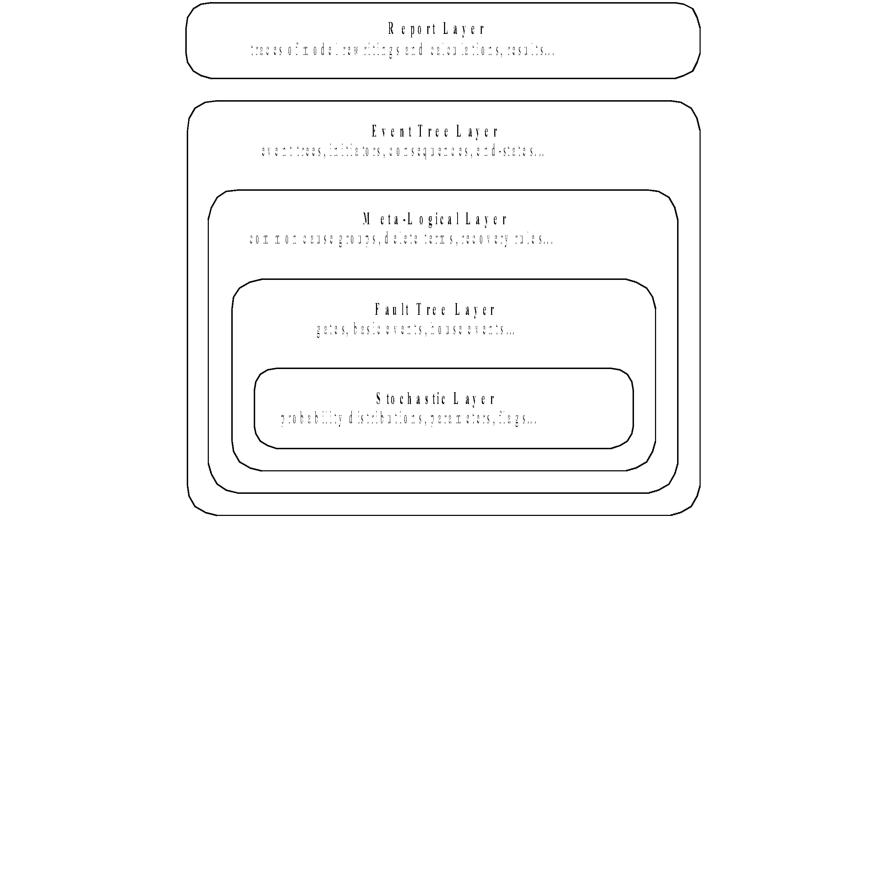
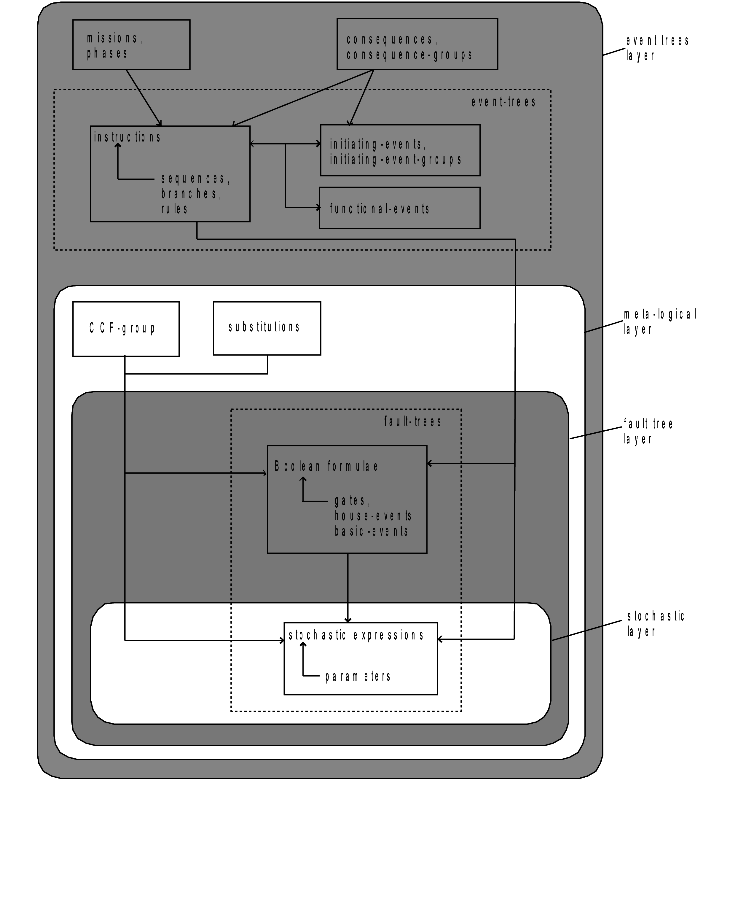
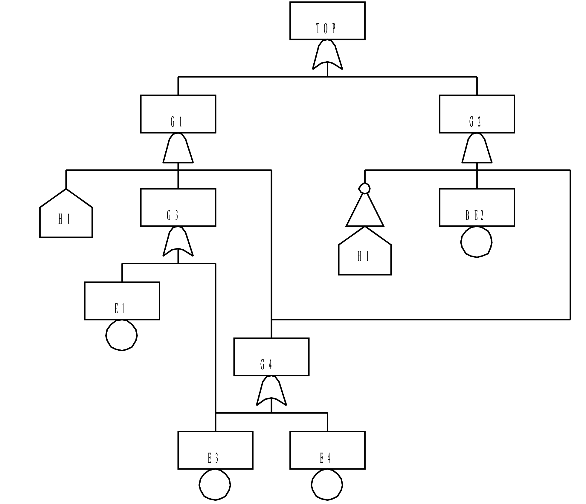
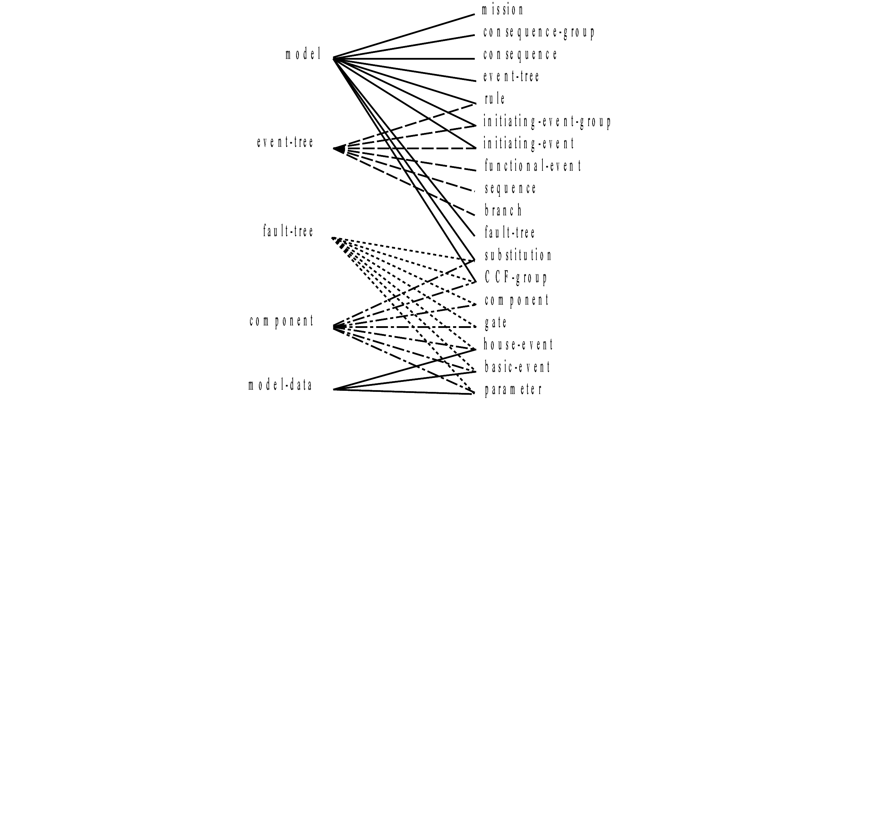

Open-PSA Model Exchange Format
Table of Contents
- 1. The Open-PSA Initiative
- 2. Introduction
- 3. Anatomy of the Model Exchange Format
- 4. Fault Tree Layer
- 5. Stochastic Layer
- 6. Meta-Logical Layer
- 7. Event Tree Layer
- 8. Organization of a Model
- 9. Report Layer
- 10. References
- 11. Extended Backus-Naur Form
- 12. DTD of the Open-PSA Model Exchange Format
- 13. Backus-Naur form for the Open-PSA Model Exchange Format
| Title | Open-PSA Model Exchange Format |
| Version | 2.0d |
| Creation Date | August 1st, 2007 |
| Last modification date | November 28, 2016 |
| Editors | Epstein Steven, Rauzy Antoine |
Contributors
This document presents the ``Open-PSA Model Exchange Format''. The redaction of this representation format is a shared effort. The following persons contributed to various extents to the current version of the document: Becker Guenter, Čepin Marko, Contini Sergio, Ducamp François, Epstein Steven, Herrero Santos Roberto, Hibti Mohamed, Kampramanis Ioanis, Klügel Jens, Meléndez Asensio Enrique, Perez Mulas Arturo, Nusbaumer Olivier, Quatrain Richard, Rauzy Antoine, Rauzy Pablo, Reinhart Mark and Sörman Johan.
1 The Open-PSA Initiative

The Open Initiative for Next Generation of Probabilistic Safety Assessment
As we enter a time in which safety and reliability have come to the attention of the public, especially in the face of climate change and a nuclear renaissance, efforts are being made in the direction of the ``next generation'' of Probabilistic Safety Assessment with regards to software and methods. These new initiatives hope to present a more informative view of the actual models of systems, components, and their interactions, which helps decision makers to go a step forward with their decisions.
The Open Initiative for Next Generation PSA provides an open and transparent public forum to disseminate information, independently review new ideas, and spread the word. We want to emphasize an openness which leads to methods and software which have better quality, better understanding, more flexibility, encourage peer review, and allow the transportability of models and methods.
We hope to bring to the international PSA community the benefits of an open initiative, and to bring together the different groups who engage in large scale PSA, in a non-competitive and commonly shared organization.
Two of our most important activities will be as a standards body and clearing house for methodologies for the good of PSA. In this way, researchers, practitioners, corporations, and regulators can work together in open cooperation.
Over the last 5 years, some non classical calculation techniques and modeling methods in nuclear PSA have been extensively studied. The concern of these investigations has been to end the use of (1) numerical approximations for which we do not know the error factors, (2) modeling methods which leave out perhaps critical elements of the actual plant, and (3) lack of good man-machine and organizational modeling techniques. From all these investigations, some alarming issues related to large, safety critical PSA models have been raised, which we feel need to be addressed before new calculation engines or next generation user interfaces are put into place:
- Quality assurance of calculations;
- Un-founded reliance on numerical approximations and truncation;
- Portability of the models between different software;
- Clarity of the models;
- Completeness of the models;
- Modeling of human actions;
- Better visualization of PSA results;
- Difficulty of different software working with the same PSA model;
- Lack of data and software backward and forward compatibility;
- No universal format for industry data.
New calculation engines and user interfaces and a computer representation for large, safety critical PSA models, which is independent of PSA software, represent a step forward in addressing the above issues.
As our first activity, we have created a working group to begin the creation of a model exchange format for PSA models. Other working groups in the other aforementioned areas are expected to follow the success of the first one.
We believe that each of you who are reading this manifesto have similar ideas. Let us enter into an open forum together, and work together to know the limits of our methods, to push those limits, and to expand our understanding.
2 Introduction
2.1 Why Do We Need a Model Exchange Format?
Over the years, research efforts have been made in the direction of ``next generation'' PSA software and ``declarative modeling'', which try to present a more informative view of the actual systems, components, and interactions which the model represents. The concern of these studies has been to end the use of approximations: numerical approximations for which we do not know the error factors, and modeling approximations which leave out perhaps critical elements of the actual system under study. From all these investigations, some issues related to large nuclear PSA models have been raised, which need to be addressed before to put new calculation engines or next generation user interfaces into place. To address these issues enumerated below, an ``Model Exchange Format'', a representation which is independent of all PSA software, must be in place. In this perspective software would retain their own internal representation for a model; but each software would also be able to share models and industry data by means of the Model Exchange Format.
Quality assurance of calculations: at the moment, a model built with one software, cannot be simply quantified with another software, and visa versa; there are too many software dependent features used by modelers to make inter-calculation comparisons a one-step process. The Model Exchange Format will allow models to be quantified by several calculation engines; therefore quality assuring results in a strong way.
Over reliance on numerical approximations and truncation: while this cannot be solved directly by the Model Exchange Format, as new calculation engines are completed, the Model Exchange Format will allow new engines to be snapped into new (or existing) user interfaces without changing the model or user interface software.
Portability of the models between different software: at the moment, models are essentially non-portable between calculation engines, as pointed out above. The Model Exchange Format allow complete, whole models to be shared right now between software; the bonus will be on each software to correctly interpret the model representation.
Clarity of the models: For one who examined a number of large nuclear PRA models, it is obvious that just looking at the basic events, gates and fault trees/event trees is of little help in understanding the ``where'', ``why'', and ``how'' of model elements: common cause failures, initiating events, sequence information, alignment information, systems and trains, flags, logic of recovery rules, or the dreaded ``delete terms''. The Model Exchange Format employs what is becoming known as structured modeling. Structured Modeling takes its name from the structured programming movement in the 1970s. Before that time, variables, arrays, and other data structures, were used with no definitions and explanations. Structured programming techniques forced programmers to ``declare variables'' at the beginning of a program by name and also by the type of variable it was: an integer, a real number, and so on. In this way the meaning of the program became clearer, and calculation speeds were increased. Structured Modeling, as applied to PRA models and software, has the same goal of making the meaning of the model more clear, more transparent, and to improve the speed and accuracy of the calculation. The user interface to create such a model is not of concern here. The concern is to discover the distinct model elements which are needed to quantify and clarify large PRA models.
Completeness of the models: without clarity, there can be no knowledge of the completeness of the model, since their very size and complexity strains the brain. The Model Exchange Format will create more survey-able models.
Difficulty of different software working with the same PSA model: as more risk applications are being requested (seismic, fire, balance of plant assessments, risk monitors, release calculations), difficulties are arising because each risk application and major PSA software have different internal data formats. The Model Exchange Format will be able easily to share model data between applications and specialized software would be available for all models.
Lack of data and software backward and forward compatibility: again, as more diverse software need to interact, such as safety monitors, calculation engines, and fault tree editors, the need to have data and programs separate becomes of high importance. The Model Exchange Format solves this problem by allowing programs to change without the need for the data format to change and for other programs to change their operations.
No universal format for industry data: The Model Exchange Format will be a perfect way to publish industry data such as common cause, failure rates, incidents, and initiating event frequencies.
2.2 Requirements for the Model Exchange Format
To be acceptable and widely accepted, the Model Exchange Format for PSA must fulfill a number of requirements. The following list is an attempt to summarize these requirements.
Soundness: the Model Exchange Format must be unambiguous. The semantics of each construct must be clearly given, in such way that no two correct implementations of the Model Exchange Format can differ in their interpretation of models (they may differ however, at least to a certain extent, in the results they provide if they use different calculation methods).
Completeness: the Model Exchange Format should cover as much as possible; not only all aspects of PSA models, but also references to external documentations and format of the results. These issues have to be covered by the Model Exchange Format in order to make models actually portable and to be able to cross check calculations.
Clarity: the Model Exchange Format should be self-documenting to a large extent. The constructs of the Model Exchange Format should reflect what the designer of the model has in mind. Low level constructs would help in making the format universal (any model can be eventually represented by means of a Fortran or C program, not to speak of a Turing machine or a Church lambda term). But constructs which are at too low a level would be of little help, and even counter-productive, for model review.
Generality: it should be possible to cast all of the existing models into the Model Exchange Format without rewriting them from scratch. The translation of existing models should be automated, at least to a large extent. Moreover, any existing tool should be able to use the Model Exchange Format as its representation language. Indeed, most of the tools implement only a subpart of the Model Exchange Format but the Model Exchange Format should be a superset of the underlying formalisms of all existing tools.
Extensibility: the Model Exchange Format should not restrict developers if they wish to introduce interesting new features in their tools. This means that it should be easy to introduce new constructs into the Model Exchange Format, even if these constructs are not recognized by all of the tools. On the other hand, these new constructs should be clearly identified; their semantics should be clear and public in such way that any other developer can embed the feature in his own tool.
2.3 Choice of XML
To create the Model Exchange Format, we must make formal definitions for representing existing PRA models and define a syntax to write them. The Model Exchange Format is defined as a XML document type. XML is widely used on the internet as a common way for programs to share data. It is well structured and makes it possible to give explicit name to each construct. XML is therefore well suited for structured modeling. By giving the elements of a model a formal designation (``this is an initiating event'', ``this is a basic event'', and so on), quantification results and understanding of the model can be improved.
XML presents another major advantage for tool developers: many development teams have more or less already designed its own XML parser and many such parsers are anyway freely available on internet. Therefore the choice of a XML based syntax discharges programmers of PSA tools of the tedious task to design parsers and to perform syntactic checks. Moreover, due to their tree-like structure, it is easy to ignore parts of a XML description that are not relevant for a particular purpose. Therefore tools which do not implement the whole Model Exchange Format can easily pick up what they are able to deal with.
2.4 A Four-Plus-One Layers Architecture
The Model Exchange Format relies on a four-plus-one layers architecture, as pictured Figure im-architecture. Each layer corresponds to a specific class of objects/mathematical constructs.

Figure 2: Architecture of the Model Exchange Format
- The first, or stochastic, layer is populated with all stochastic aspects of models: probability distributions for the failure rates of basic events, parameters of these distributions and distributions of these parameters, flags…
- The second, or fault tree layer, is populated with logical components of fault trees (gates, basic events, house events). This layer is the core of PSA models. The two first layers can be used in isolation. Some existing tools implement them only.
- The third, or meta-logical, layer is populated constructs like common cause groups, delete terms, recovery rules that are used to give flavors to fault trees…
- The fourth, or event tree, layer is populated with event trees, initiating events and consequences. The Model Exchange Format sees event trees as (graphical) programs. The execution of such a program produces a set of sequences, i.e. a set (a disjunction) of Boolean formulae. Probability distributions are also collected while walking the event tree.
- The fifth, or report layer, is populated with constructs to store results of calculations. This includes constructs to describe calculations (version of the model, used engine, used cutoffs, targeted group of consequences, calculated quantities…) and well as minimal cutsets and other results.
This five layers architecture helps to understand what the different elements of a model are and what their respective roles are. In a word, it is the backbone of the Model Exchange Format. It should be clear however that any model will contain elements of the first fourth levels and that these elements may be not arranged by levels. For instance, a fault tree description will probably contain probability distributions of basic events as well as common cause groups. Again, the five layers architecture intends to differentiate elements according to their meanings and operational behaviors.
2.5 Formalism
Throughout this document, we shall present a number of syntactic constructions such as Boolean formulae, probability distributions, and so on. These constructions will be eventually represented by means of XML terms. XML is however a bit too verbose to make clear the underlying mathematical nature of objects at hand. Therefore we shall use (in a rather loose way) the Extended Backus-Naur form to define constructs. A presentation of the Extended Backus-Naur form can be found in Appendix A..
There are several formal ways to describe a XML grammar. The most popular one is probably the XML Document Type Definition (DTD). A DTD is associated with an XML document via a Document Type Declaration, which is a tag that appears near the start of the XML document. The declaration establishes that the document is an instance of the type defined by the referenced DTD. DTD are a good verification tools, but hard to interpret by a human. Therefore, we shall present the grammar of the Model Exchange Format mainly by means of examples and semi-formal descriptions with the Extended Backus Naur form. A formal DTD for the whole Model Exchange Format is given Appendix B.. A semi-formal Backus-Naur form for the Model Exchange Format is given Appendix C..
It is worth noting that the XML descriptions we are giving here can be extended in any way to fulfill the needs of a particular tool. In particular, comments and pointers to documentation should be added here and there to the model.
2.6 Organization of the document
The remainder of this document is organized into six chapters corresponding to an introductive overview, one chapter per layer of the architecture of the Model Exchange Format and one additional chapter for models as a whole.
- Chapter III gives an overview of main elements of a model and shows how these elements are organized. It discusses how to split a description into several files, how to solve naming conflicts…
- Chapter IV presents the fault tree layer. The fault tree layer is not the lowest one in the hierarchy. However, fault trees are the most basic and the central concept of PSA models. For this reason, we put it in front.
- Chapter V present the stochastic layer, i.e. all the mechanisms to associate probability distributions to basic events.
- Chapter VI presents the meta-logical layer.
- Chapter VII presents the event tree layer.
- Chapter VIII discusses the organization of models.
- Finally, chapter presents the report/results layer, i.e. the normalized format for results of assessment of PSA models.
Three appendices give additional details or summarize the contents of these six chapters.
- Appendix A. presents the Backus-Naur form we use throughout this document to describe both the mathematical structure of the constructs and their XML representation.
- Appendix B. gives the Document Type Definition (DTD) of the full Model Exchange Format.
- Appendix C. gives the Backus-Naur form of the Model Exchange Format.
3 Anatomy of the Model Exchange Format
This chapter presents the anatomy of the Model Exchange Format, i.e. the main components of a model and their relationships. We assume the reader is familiar with the fault tree/event tree methodology.
3.1 Elements of a model
3.1.1 Variables, Terms and Containers
Elements of a model are, as expected, components of fault trees/event trees, namely basic events, gates, house events, probability distributions, initiating events, safety systems, consequences… Conceptually, it is convenient to arrange most of these elements into one of the three categories: terms, variables and containers.
Variables: Variables are named elements. Gates, basic events, house events, stochastic parameters, functional events, initiating events and consequences are all variables. A variable is always defined, i.e. associated with a term.
Terms: Terms are built over variables, constants and operators. For instance, the Boolean formula ``primary-motor-failure or no-current-to-motor'' is a term built over the basic event ``primary-motor-failure'', the gate ``no-current-to-motor'' and the Boolean operator ``or''. Similarly, the probability distribution ``1-exp(-lambda*t)'' is a term built over the numerical constant ``1'', the failure rate ``lambda'' the time ``t'', and the three arithmetic operators ``-``, ``exp'' and ``*'' (``lambda'' and ``t'' are variables). Note that variables are terms
Containers: According to our terminology, a model is nothing but a set of definitions of variables. Since a brute list of such definitions would lack of structure, the Model Exchange Format makes it possible to group them into containers. Containers have names and can be themselves grouped into higher level containers. For instance, a fault tree is a container for definitions of gates, house-events, basic events and parameters of probability distributions. Similarly, an event tree is a container for definitions of initiating events, functional events, sequences…
We are now ready to list the main elements of a model. The exact content and role of these different elements will be detailed in the subsequent chapters.
3.1.2 Stochastic Layer
Stochastic variables and terms: Stochastic expressions are terms that are used to define probability distributions (associated with basic events). Stochastic variables are called parameters. For instance, ``1-exp(-lambda*t)'' is a stochastic expression built over the two parameters ``lambda'' and ``t''.
From a programming viewpoint, it is convenient to group definitions of parameters into (stochastic) containers. The stochastic layer is populated with stochastic parameters, expressions and containers.
3.1.3 Fault Tree Layer
Boolean formulae, Basic Events, House Events and Gates: Boolean formulae, or formulae for short, are terms built over the usual set of constants (true, false), connectives (and, or, not…) and Boolean variables, i.e. Basic Events, Gates and House Events. Boolean variables are called events, for that's what they represent in the sense of the probability theory. Basic events are associated with probability distributions, i.e. with (stochastic) expressions. Gates are defined as Boolean formulae. House events are special gates that are defined as Boolean constants only.
Fault Trees: According to what precedes, a fault tree is container for definitions of parameters, basic events, house events and gates.
The fault tree layer is populated with all elements we have seen so far.
3.1.4 Meta-Logical Layer
The meta-logical layer contains extra-logical constructs in addition to fault trees. These extra-logical constructs are used to handle issues that are not easy to handle in a purely declarative and logical way.
Common Cause Groups: Common cause groups are sets of basic events that are not statistically independent. Several models can be used to interpret common cause groups. All these models consist in splitting each event of the group into a disjunction of independent basic events.
Substitutions: delete terms, exchange events, and recovery rules are global and extra-logical constraints that are used to describe situations such as physical impossibilities, technical specifications, or to modify the probability of a scenario according to some physical rules or judgments about human actions. In the Model Exchange Format, these extra-logical constructs are all modeled by means of the generic notion of substitution.
3.1.5 Event Tree Layer
As we shall see, event trees must be seen as a (semi-)graphical language to describe and to combine sequences. Elements of this language are the following.
Event Trees: Event Trees define scenarios from an Initiating Event (or an Initiating Event Group) to different end-states. In the Model Exchange Format, end-states are called Sequences. The same event tree can be used for different Initiating Events. Along the scenarios, ``flavored'' copies of fault trees are collected and/or values are computed. Flavors are obtained by changing values of house events and parameters while walking along the tree. Event Trees are containers according to our terminology. They contain definition of functional events and states.
Initiating Events, Initiating Event Groups: Initiating Events describe the starting point of an accidental sequence. They are always associated with an event tree, although they are in general declared outside of this event tree. The Model Exchange Format makes it possible to chain event trees. Therefore, the end-state of a sequence of an event tree may be the initiating event of another event tree. Initiating Events are variables, according to our terminology. Initiating event groups are sets of initiating events. Despite of their set nature, initiative events are also variables, because an initiating event group may contain another one (the initiating terms are set operations).
Functional Events: Functional Events describe actions that are taken to prevent an accident or to mitigate its consequences (usually by means of a fault tree). Depending on the result of such an action, the functional event may be in different, e.g. ``success'' or ``failure''. Functional Events label the columns the graphical representation of Event Trees.
Sequences, Branches: Sequences are end-states of branches of event trees. Branches are named intermediate states.
Instructions, Rules: Instructions are used to describe the different paths of an event tree, to set the states of functional events, to give flavors of fault trees that are collected, and to communicate with the calculation engine. Rules are (named) groups of Instructions. They generalize split-fractions of the event tree linking approach, and boundary condition sets of the fault tree linking approach.
Consequences, Consequence groups: Consequences are couples made of an initiating event and a sequence (an event tree end-state). Consequences are named and are defined. They are variables according to our terminology. Like Initiating Events, Consequences can be grouped to study a particular type of accident. Consequence Groups are also variables (the consequence terms are set operations).
Missions, Phases: In some cases, the mission of the system is split into different phase. The Model Exchange Format provides constructs to reflect this situation.
3.2 Structure of a model
3.2.1 Relationships between elements of a model
The elements of a model, their layer and their dependencies are pictured are pictured Figure im-main-el. This schema illustrates the description given in the previous section. Term categories are represented by rectangles. Variables categories are represented by rounded rectangles. A variable category is always included in a term category (for variables are terms). The three container categories, namely models, event trees and fault trees are represented by dashed rectangles. Dependencies among categories are represented by arrows.

Figure 3: The main elements of a model, their layers and their dependencies
3.2.2 Giving more structure to a model
A model (like a fault tree or an event tree) is a list of declarations. The Model Exchange Format does not require structuring these declarations: they can be given in any order, provided that the type of an object can be decided prior to any use of this object. Fault trees and event trees provide a first mean to organize models. This may be not sufficient, especially when models are big. In order to structure models, the Model Exchange Format provides the analyst with two mechanisms.
First, declarations can be grouped together by means of user defined containers. Such a container is just a XML tag. It has no semantics for the model. It just makes it possible to delimit a set of objects of the model that are physically or functionally related (for instance, the different failure modes of a physical component).
Second, the Model Exchange Format makes it possible to associate user defined attributes to the main components. For instance, we may define an attribute ``zone'' with a value ``room33'' for all constructs describing components located in the room 33. This indirect mean is very powerful. It can be used extensively to perform calculations or changes on a particular subset of elements.
3.2.3 Containers as name spaces
Once declared, elements are visible and accessible everywhere in the model. This visibility means in turn that an object of a given type, e.g. parameter or event, is unique. No two distinct objects of the same type can have the same name. This constraint seems to be fine and coherent. However, some tools do not obey the rule: two gates of two different fault trees and representing two different functions may have the same name. It is not possible to reject this possibility (as a bad modeling practice), because when models are large and several persons are working in collaboration, such name conflicts are virtually impossible to avoid.
To solve this problem, the Model Exchange Format considers containers, i.e. not only fault trees and event trees but also user defined containers, as name spaces. By default, objects defined in a container are global. But it is possible to declare them as local to the container as well. In that case, they are not visible outside the container, and tools are in charge of solving potential name conflicts.
3.2.4 Definitions, Labels and Attributes
Here follows some additional useful elements about the Model Exchange Format.
Definitions versus references: For the sake of the clarity (and for XML specific reasons), it is important to distinguish the declaration/definition of an element from references to that element. For instance, we have to distinguish the definition of the gate ``motor-fails-to-start'' (as the Boolean formula ``primary-motor-failure or no-current-to-motor''), from references to that gate into definitions of other gates.
In the Model Exchange Format, the definition of a variable or a container, for instance a gate, is in the following form.
<define-gate name="motor-fails-to-start" ...> ... </define-gate>
References to that gate are in the following form.
... <gate name="motor-fails-to-start" /> ...
So, there are two tags for each element (variable or container) of the Model Exchange Format: the tag ``define-element'' to define this element and the tag ``element'' to refer this element. Note that the attribute ``name'' is systematically used to name elements.
Labels: It is often convenient to add a comment to the definition of an object. The Model Exchange Format defines a special tag ``label'' to do so. The tag label can contain any text. It must be inserted as the first child of the definition of the object. E.g.
<define-gate name="motor-fails-to-start" ...> <label> Warning: secondary motor failures are not taken into account here. </label> ... </define-gate>
Attributes: Attributes can be associated with each element (variable or container) of the Model Exchange Format. An attribute is a pair (name, value), where both name and value are normally short strings. Values are usually scalars, i.e. they are not interpreted. In order to allow tools to interpret values, a third field ``type'' can be optionally added to attributes. The tags ``attributes'' and ``attribute'' are used to set attributes. The former is mandatory, even when only one attribute is defined. It must be inserted as the first child of the definition of the object, or just after the tag label, if any. E.g.
<define-gate name="motor-fails-to-start" ...> <label> Warning: secondary motor failures are not taken into account here. </label> <attributes> <attribute name="zone" value="room33" /> ... </attributes> ... </define-gate>
The Backus-Naur form for the XML representation of labels and attributes is as follows.
label := <label> any text </label> attributes ::= <attributes> attribute + </attributes> attribute ::= <attribute name="identifier" value="string" [type="string" ] />
4 Fault Tree Layer
The Fault Tree layer is populated with logical components of Fault Trees. It includes the stochastic layer, which contains itself the probabilistic data. The stochastic layer will be presented in the next section.
4.1 Description
Constituents of fault trees are Boolean variables (gates, basic events, and house events), Boolean constants (true and false) and connectives (and, or, k-out-of-n, not …). Despite of their name, fault trees have in general a directed acyclic graph structure (and not a tree-like structure), because variables can be referenced more than once. The simplest way to describe a fault tree is to represent it as a set of equations in the form ``variable = Boolean-formula''. Variables that show up as left hand side of an equation are gates. Variables that show up only in right hand side formulae are basic events. Finally, variables that show up only as left hand side of an equation are top events. Such a representation imposes two additional conditions: first, the set of equations must contain no loop, i.e. that the Boolean formula at the right hand side of an equation must not depend, even indirectly (recursively), on the variable at the left hand side. Second, a variable must not show up more than once at the left hand side of an equation, i.e. gates must be uniquely defined. Figure im-ft shows a Fault Tree. The corresponding set of equations is as follows.
TOP = G1 or G2
G1 = H1 and G3 and G4
G2 = not H1 and BE2 and G4
G3 = BE1 or BE3
G4 = BE3 or BE4
On the figure, basic events are surrounded with a circle. Basic events are in general associated with a probability distribution (see Chapter V).
House events (surrounded by a house shape frame on the figure) are represented as variables but are actually constants: when the tree is evaluated house events are always interpreted by their value, which is either true or false. By default, house events take the value false. Negated house events (gates, basic events) are represented by adding a small circle over their symbol.
A semi-formal description of constructs of Fault Trees is given under the Backus-Naur form FigureIV-4. This description allows loops (in the sense defined above), multiple definitions and trees with multiple top events. The presence of loops must be detected by a specific check procedure. If a variable or a parameter is declared more than once, tools should emit a warning and consider only the last definition as the good one (the previous ones are just ignored). In some circumstances, it is of interest to define several fault trees at once by means of a unique set of declarations. Therefore the presence of multiple top events should not be prevented. We shall see what parameters and expressions are in the next chapter.

Figure 4: A Fault Tree
The semantics of connectives is given Table IV -1. Note that connectives ``and'', ``or'', ``xor'', ``iff'', ``nand'' and ``nor'' are associative. Therefore it suffices to give their semantics when they take two arguments, i.e. two Boolean formulae F and G.
fault-tree-definition ::= fault-tree identifier ( event-definition | parameter-definition ) event-definition ::= gate = formula | basic-event = expression | house-event = Boolean-constant formula ::= event | Boolean-constant | and formula+ | or formula+ | not formula | xor formula+ | iff formula+ | nand formula+ | nor formula+ | atleast integer formula+ | cardinality integer integer formula+ | imply formula formula event ::= gate | basic-event | house-event Boolean-constant ::= constant (true | false)
| Connective | Semantics |
| and | F and G is true if both F and G are true, and false otherwise |
| or | F or G is true if either F or G is true, and false otherwise |
| not | not F is true if its F is false, and false otherwise |
| xor | F xor G is equivalent to (F and not G) or (not F and G) |
| iff | F iff G is equivalent to (F and G) or (not F and not G) |
| nand | F nand G is equivalent to not (F and G) |
| nor | F nor G is equivalent to not (F or G) |
| atleast | true if at least k out of the Boolean formulae given as arguments are true, and false otherwise. This connective is also called k-out-of-n, where k is the integer and n is the Boolean formulae given in arguments |
| cardinality | true if at least l and at most h of the Boolean formulae given as arguments are true, and false otherwise. l and h are the two integers (in order) given as arguments. |
| imply | F implies G is equivalent to not F and G |
| Dynamic Gates | In a second step, it would be of interest to incorporate to the Model Exchange Format ``inhibit'' gates, ``priority'' gates and ``triggers'' (like in Boolean Driven Markov processes). All of these dynamic gates can be interpreted as ``and'' gates in a Boolean framework. In more general frameworks (like Markovian frameworks) they can be interpreted in a different way, and provide mechanisms to model in an accurate way backup systems, limited amount of resources… The complexity of the assessment of this kind of model is indeed much higher than the one of Boolean models (which is already at least NP-hard or #P-hard). |
4.2 XML Representation
The Backus-Naur form for the XML description of fault trees is given FigureIV-5 and FigureIV-6.
This description deserves some comments.
- It leaves for now the tags ``define-parameter'' and ``expression'' unspecified. We shall see in the next chapter how these tags are used to define the probability distributions.
- Similarly, the tag ``define-component'' will be explained in the next section.
- Although the Model Exchange Format adopts the declarative modeling paradigm, it is often convenient to use variables in formulae before declaring them. The Model Exchange Format therefore refers to variables with the generic term ``event'', possibly without a ``type'' attribute.
- By default, the value of a house is event is ``false''. So it is not necessary to associate a value with a house event when declaring it. We shall see section VII.3 how to change the value of a house event.
- Although events are typed (they are either gates, house events or basic events), two different events cannot have the same name (within the same name space), even if they are of different types. This point will be explained in the next section.
fault-tree-definition ::=
<define-fault-tree name="identifier" >
[ label ]
[ attributes ]
(event-definition | parameter-definition |component-definition )*
</define-fault-tree >
component-definition ::=
<define-component name="identifier" [ role="private|public" ] >
[ label ]
[ attributes ]
( event-definition | parameter-definition | component-definition)*
<define-component>
model-data ::=
<model-data>
( house-event-definition | basic-event-definition | parameter-definition )*
</model-data>
event-definition ::=
gate-definition
| house-event-definition
| basic-event-definition
gate-definition ::=
<define-gate name="identifier" [ role="private|public" ] >
[ label ]
[ attributes ]
formula
</define-gate>
house-event-definition ::=
<define-house-event name="identifier" [ role="private|public" ] >
[ label ]
[ attributes ]
[ Boolean-constant ]
</define-house-event>
basic-event-definition ::=
<define-basic-event name="identifier" [ role="private|public" ] >
[ label ]
[ attributes ]
[ expression ]
</declare>
formula ::=
event
| Boolean-constant
| <and> formula+ </and>
| <or> formula+ </or>
| <not> formula </not>
| <xor> formula+ </xor>
| <iff> formula+ </iff>
| <nand> formula+ </nand>
| <nor> formula+ </nor>
| <atleast min="integer" > formula+ </atleast>
| <cardinality min="integer" max="integer" > formula+ </cardinality>
| <imply> formula formula </imply>
event ::=
<event name="identifier" [ type="event-type" ] />
| <gate name="identifier" />
| <house-event name="identifier" />
| <basic-event name="identifier" />
event-type ::= gate | basic-event | house-event
Boolean-constant ::= <constant value="Boolean-value" />
Boolean-value ::= true | false
The attribute ``role'' is used to declare whether an element is public or private, i.e. whether it can be referred by its name everywhere in the model or only within its inner most container. This point will be further explained in the next section. This attribute is optional for by default all elements are public.
The fault tree pictured FigureIV-3 is described FigureIV-7. In this representation, the house event ``h1'' has by default the value ``true''. Basic events are not declared for it is not necessary, so no probability distributions they are not associated with a probability distribution.
4.3 Extra Logical Constructs and Recommendations
4.3.1 Model-Data and Components
The Model Exchange Format provides a number of extra-logical constructs to document and structure models. Labels and attributes are introduced Section III.2.4. They can be associated with declared element in order to document this element. Fault trees are a first mean to structure models. A fault tree groups any number of declarations of gates, house events, basic event and parameters.
It is sometimes convenient to group definitions of house events, basic events and parameters outside fault trees. The Model Exchange Format provides the container ``model-data'' to do so.
The Model Exchange Format makes it possible to group further declarations through the notion of component. A component is just a container for declarations of events and parameters. It has a name and may contain other components. The use of components is illustrated by the following example.
Figure FigureIV-8 shows a fault tree FT with three components A, B and C. The component B is nested into the component A. The XML representation for this Fault Tree is given Figure FigureIV-9. With a little anticipation, we declared basic events. Note that components and fault trees may also contain definitions of parameters. Note also that the basic event BE1, which is declared in the component A, is used outside of this component (namely in the sibling component C).

Figure 5: A Fault Tree with Three Components
4.3.2 Solving Name Conflicts: Public versus Private Elements
By default, all of the elements of a model are public: they are visible everywhere in the model and they can be referred by their name. For instance, the basic event ``BE1'' of the fault tree pictured Figure FigureIV-9 can be just referred as ``BE1''. This principle is fairly simple. It may cause however some problem for large models, developed by several persons: it is hard to prevent the same name to be used twice, especially for what concerns gates (some software allow actually this possibility).
The Model Exchange Format makes it possible to declare elements of fault trees either as public or as private (to their inner most container). Unless declared otherwise, an element is public if its innermost container is public and private otherwise. For instance, if the component ``A'' of the fault tree pictured Figure FigureIV-9 is declared as private, then the component ``B'' (and its two basic events ``BE2'' and ``BE3''), the gates ``G1'' and ``G2'' and the basic event ``BE1'' are private by default. There is no difference between public and private elements except that two private elements of two different containers may have the same name, while public elements must be uniquely defined.
There is actually three ways to refer an element:
- An element can be referred by its name. This works either if the element is public or if it is referred inside the container (fault tree or component) in which it is declared. For instance, if the basic event ``BE1'' is public, it can be referred as ``BE1'' anywhere in the model. If it is private, it can be referred as ``BE1'' only inside the component ``A''.
- An element can be referred by its full path (of containers), whether it is public or private. The names of containers should be separated with dots. For instance, the basic event ``BE2'' can be referred as ``FT.A.B.BE2'' anywhere in the model.
- Finally, an element can be referred by its local path, whether it is public or private. For instance, if the gate ``G1'' can be referred as ``FT.A.G1'' outside of the fault tree ``FT'', as ``A.G1'' inside the declaration of ``FT'', and finally as ``G1'' inside the declaration of the component ``A''. If the basic event BE1 is private (for a reason or another), it should be referred either as ``FT.A.BE1'' inside the component ``C''. In this case, the definition of the gate ``G3'' is as follows.
<define-gate name="G3"> <and> <basic-event name="FT.A.BE1" /> <basic-event name="BE4" /> </and> </define-gate>
The important point here is that it is possible to name two private elements of two different containers with the same identifier. For instance, if components ``B'' and ``C'' are private, it is possible to rename the basic-event ``BE4'' as ``BE2''. Outside these two components the two basic events ``B2'' must be referred using their (local or global) paths.
4.3.3 Inherited attributes
Attributes associated with a container (fault tree, event tree or component) are automatically inherited by all the elements declared in the container. It is indeed possible to change the value of the attribute at element level.
4.3.4 Recommendations
Layered Models: In PSA models, fault trees are in general layered, i.e. arguments of connectives (and, or…) are always either variables or negations of variables. Although there is no reason to force such a condition, it is recommended to obey it, for the sake of clarity.
Use Portable Identifiers: In the XML description of fault trees, we intentionally did not define identifiers. In many fault tree tools, identifiers can be any string. It is however strongly recommended for portability issues to use non problematic identifiers, like those of programming languages, and to add a description of elements as a comment. This means not using lexical entities such as spaces, tabulations, ``.'' or ``/'' in names of elements, as well as realizing that some old tools cannot differentiate between capital and small letters.
Role of Parameters, House Events and Basic Events: Parameters, house events and basic events should be always public, in order to facilitate their portability from one tool to another.
5 Stochastic Layer
5.1 Description
The stochastic layer is populated with failure probabilities or failure probability distributions associated with basic events (in the event tree linking approach, functional events also can be associated with such a distribution). Probability distributions are described by (stochastic) expressions, which are terms, according to the terminology of Chapter III. These expressions may depend on parameters (variables), so the stochastic layer can be seen a set of stochastic equations.
Stochastic equations associated with basic events play actually two roles:
- They are used to calculate probability distributions of each basic event, i.e. for a given mission time t, the probability Q(t) that the given basic event occurs before t. The probability distribution associated with a basic event is typically a negative exponential distribution of parameter λ:
Note that, for the sake of the clarity, the Model Exchange Format represents explicitly the mission time as a parameter of a special type.
- Parameters are sometimes not known with certainty. Sensitivity analyses, such as Monte-Carlo simulations, are thus performed to study the change in risk due to this uncertainty. Expressions are therefore used to describe distributions of parameters. Typically, the parameter λ of a negative exponential distribution will be itself distributed according to a lognormal law of mean 0.001 and error factor 3.
Stochastic expressions are made of the following elements:
- Boolean and numerical constants,
- Stochastic variables, i.e. parameters, including the special variable to represent the mission time,
- Boolean and arithmetic operations (sums, differences, products…),
- Built-in expressions that can be seen as macro-expressions that are used to simplify and shorten the writing of probability distributions (E.g. exponential, Weibull…),
- Primitives to generate numbers at pseudo-random according to some probability distribution. The base primitive makes it possible to generate random deviates with a uniform probability distribution. Several other primitives are derived from this one to generate random deviates with normal, lognormal… distributions. Moreover, it is possible to define discrete distributions ``by hand'' through the notion of histogram.
- Directives to test the status of initial and functional events.
Figure V -10 sketches the Backus-Naur form for the constructs of the stochastic layer. Note that, conversely to variables (events) of the Fault Tree layer, parameters have to be defined (there is no equivalent to Basic Events).
basic-event-declaration ::= basic-event = expression
parameter-declaration ::= parameter = expression
expression ::=
constant | parameter | operation | built-in | random-deviate | test-event
constant ::= bool | integer | float
parameter ::= regular-parameter | system-mission-time
operation ::=
and expression+
| or expression+
| not expression
| eq expression expression
| df expression expression
...
| neg expression
| add expression+
| sub expression+
| mul expression+
| div expression+
| pow expression expression
...
| if expression then expression else expression
built-in ::=
exponential expression expression
| Weibull expression expression expression expression
...
random-deviate ::=
uniform-deviate expression expression
| lognormal-deviate expression expression expression
| histogram
...
test-event ::=
test-initial-event name
| test-functional-event name state
The XML representation of the stochastic layer just reflects these different constructs.
5.2 Operations
5.2.1 Numerical Operation
Table TableV-2 gives the list of arithmetic operators proposed by the Model Exchange Format. Their XML representation is given Figure FigureV-12.
| Operator | #arguments | Semantics |
| neg | 1 | unary minus |
| add | >1 | addition |
| sub | >1 | subtraction |
| mul | >1 | multiplication |
| div | >1 | division |
| pi | 0 | 3.1415926535… |
| abs | 1 | absolute value |
| acos | 1 | arc cosine of the argument in radians |
| asin | 1 | arc sine of the argument in radians |
| atan | 1 | arc tangent of the argument in radians |
| cos | 1 | cosine |
| cosh | 1 | hyperbolic cosine |
| exp | 1 | exponential |
| log | 1 | (Neperian) logarithm |
| log10 | 1 | decimal logarithm |
| mod | 2 | modulo |
| pow | 1 | power |
| sin | 1 | sine |
| sinh | 1 | hyperbolic sine |
| tan | 1 | tangent |
| tanh | 1 | hyperbolic tangent |
| sqrt | 1 | square root |
| ceil | 1 | first integer greater than the argument |
| floor | 1 | first integer smaller than the argument |
| min | >1 | minimum |
| max | >1 | maximum |
| mean | >1 | mean |
numerical-operation ::= <neg> expression </neg> | <add> expression+ </add> | <sub> expression+ </sub> | <mul> expression+ </mul> | <div> expression+ </div> | <pi /> | <abs> expression </abs> | <acos> expression </acos> | <asin> expression </asin> | <atan> expression </atan> | <cos> expression </cos> | <cosh> expression </cosh> | <exp> expression </exp> | <log> expression </log> | <log10> expression </log10> | <mod> expression expression </mod> | <pow> expression expression </pow> | <sin> expression </sin> | <sinh> expression </sinh> | <tan> expression </tan> | <tanh> expression </tanh> | <sqrt> expression </sqrt> | <ceil> expression </ceil> | <floor> expression </floor> | <min> expression+ </min> | <max> expression+ </max> | <mean> expression+ </mean>
Example: Assume for instance we want to associate a negative exponential distribution with a failure rate λ=1.23e-4/h to the basic event ``pump-failure''. Using primitives defined above, we can encode explicitly such probability distribution as follows.
<define-basic-event name="pump-failure" > <sub> <float value="1.0" /> <exp> <mul> <neg> <parameter name="lambda" /> </neg> <system-mission-time /> </mul> </exp> </sub> </define-basic-event> <define-parameter name="lambda" > <float value="1.23e-4" /> </define-parameter>
5.2.2 Boolean Operations
Table V-3 gives the list of Boolean operators proposed by the Model Exchange Format. Their XML representation is given Figure TableV-13.
| Operator | #arguments | Semantics |
| and | > 1 | Boolean and |
| or | >1 | Boolean or |
| not | 1 | Boolean not |
| eq | 2 | = |
| df | 2 | ≠ |
| lt | 2 | < |
| gt | 2 | > |
| leq | 2 | ≤ |
| geq | 2 | ≥ |
5.2.3 Conditional Operations
The Model Exchange Format proposes two conditional operations: an ``if-then-else'' operation and a ``switch/case'' operation. The latter is a list of pairs of expressions, introduced by the tag ``case''. The first expression of the pair should be a Boolean condition. If this condition is realized, then the second expression is evaluated and its value returned. Otherwise, the next pair is considered.
The list ends with an expression, in order to be sure that the switch has always a possible value. The XML representation for conditional operation is given Figure FigureV-14.
5.3 Built-Ins
5.3.1 Description
Built-ins can be seen as macro arithmetic expressions. They are mainly used to simplify the writing of probability distributions. A special built-in ``extern-function'' makes it possible to define externally calculated built-ins. As for arithmetic operators, more built-ins can be added on demand to the Model Exchange Format. Here follows a preliminary list of built-ins. Table IV -1 summarizes this preliminary list.
Exponential with two parameters: this built-in implements the negative exponential distribution. The two parameters are the hourly failure rate, usually called λ, and the time t. It definition is as follows.
Exponential with four parameters (GLM): this built-in generalizes the previous one. It makes it possible to take into account repairable components (through the hourly repairing rate µ) and failures on demand (through the probability γ of such an event). It takes four parameters, γ, the hourly failure rate λ, µ and the time t (in this order). Its definition is as follows.
Weibull: this built-in implements the Weibull distribution. It takes four parameters: a scale parameter α, a shape parameter β, a time shift t0, and the time t (in this order). Its definition is as follows.
Periodic test: In several applications, it is of interest to introduce some specific distributions to describe periodically tested components. A further investigation is certainly necessary on this topic. We tentatively give here a candidate definition (that is extracted from one of the tools we considered).
The ``periodic-test'' built-in would take the following parameters (in order).
| λ | failure rate when the component is working. |
| λ* | failure rate when the component is tested. |
| µ | repair rate (once the test showed that the component is failed). |
| τ | delay between two consecutive tests. |
| θ | delay before the first test. |
| γ | probability of failure due to the (beginning of the) test. |
| π | duration of the test. |
| x | indicator of the component availability during the test (1 available, 0 unavailable). |
| σ | test covering: probability that the test detects the failure, if any. |
| ω | probability that the component is badly restarted after a test or a repair. |
| t | the mission time. |

Figure 6: Meaning of parameters τ, θ and π of the ``periodic-test'' built-in.
There are three phases in the behaviour of the component. The first phase corresponds to the time from 0 to the date of the first test, i.e. θ. The second phase is the test phase. It spreads from times θ+n.τ to θ+n.τ+π, with n any positive integer. The third phase is the functioning phase. It spreads from times θ+n.τ+π from θ+(n+1).τ.
In the first phase, the distribution is a simple exponential law of parameter λ.
The component may enter in the second phase in three states, either working, failed or in repair. In the latter case, the test is not performed. The Markov graphs for each of these cases are pictured Figure im-Multi-phase.

Figure 7: Multi-phase Markov graph for the ``periodic-test'' built-in.
Ai's , Fi's, Ri's states correspond respectively to states where the component is available, failed and in repair. Dashed lines correspond to immediate transitions. Initial states are respectively A1, F1 and R1.
The situation is simpler in the third phase. If the component enters available this phase, the distribution follows an exponential law of parameter λ. If the component enters failed in this phase, it remains phase up to the next test. Finally, the Markov graph for the case where the component is in repair is the same as in the second phase.
The Model Exchange Format could provide also two simplified forms for the periodic test distribution.
Periodic-test with 5 arguments: The first one takes five parameters: λ, µ, τ, θ and t. In that case, the test is assumed to be instantaneous. Therefore, parameters λ* (the failure rate during the test) and x (indicator of the component availability during the test) are meaningless. There other parameters are set as follows.
- γ (the probability of failure due to the beginning of the test) is set to 0.
- σ (the probability that the test detects the failure, if any) is set to 1.
- ω (the probability that the component is badly restarted after a test or a repair) is set to 0.
Periodic-test with 4 arguments: The second one takes only four parameters: λ, τ, θ and t. The repair is assumed to be instantaneous (or equivalently the repair rate µ = +∞).
Extern functions: The Model Exchange Format should provide a mean to call extern functions. This makes it extensible and allows the link the PSA assessment tools with complex tools to calculate physical behavior (like fire propagation or gas dispersion). This call may take any number of arguments and return a single value at once (some interfacing glue can be used to handle the case where several values have to be returned). It has been also suggested that extern function calls take XML terms as input and output. This is probably the best way to handle communication between tools, but it would be far too complex too embed XML into stochastic expressions.
| Built-in | #arguments | Semantics |
| exponential | 2 | negative exponential distribution with hourly failure rate and time |
| exponential | 4 | negative exponential distribution with probability of failure on demand, hourly failure rate, hourly repair rate and time |
| Weibull | 4 | Weibull distribution with scale and shape parameters, a time shift and the time |
| periodic-test | 11, 5 or 4 | Distributions to describe periodically tested components |
| extern-function | any | call to an extern routine |
5.3.2 XML Representation
The Backus-Naur grammar for the XML representation of built-ins is given Figure FigureV-17.
5.4 Primitive to Generate Random Deviates
5.4.1 Description
Primitives to generate random deviates are the real stochastic part of stochastic equations. They can be used in two ways: in a regular context they return a default value (typically their mean value). When used to perform Monte-Carlo simulations, they return a number drawn at pseudo-random according their type. The Model Exchange Format includes two types of random deviates: built-in deviates like uniform, normal or lognormal and histograms that are user defined discrete distributions. A preliminary list of distributions which is summarized Table V -5. As for arithmetic operators and built-ins, this list can be extended on demand.
| Distribution | #arguments | Semantics |
| uniform-deviate | 2 | uniform distribution between a lower and an upper bounds |
| normal-deviate | 2 | normal (Gaussian) distribution defined by its mean and its standard deviation |
| lognormal-deviate | 3 | lognormal distribution defined by its mean, its error factor and the confidence level of this error factor |
| gamma-deviate | 2 | gamma distributions defined by a shape and a scale factors |
| beta-deviate | 2 | beta distributions defined by two shape parameters α and β |
| histograms | any | discrete distributions defined by means of a list of pairs |
Uniform Deviates: These primitives describe uniform distributions in a given range defined by its lower- and upper-bounds. The default value of a uniform deviate is the mean of the range, i.e. (lower-bound + upper-bound)/2.
Normal Deviates: These primitives describe normal distributions defined by their mean and their standard deviation (refer to text book for a more detailed explanation). By default, the value of a normal distribution is its mean.
Lognormal distribution: These primitives describe lognormal distributions defined by their mean µ and their error factor EF. A random variable is distributed according to a lognormal distribution if its logarithm is distributed according to a normal distribution. If µ and σ are respectively the mean and the standard deviation of the distribution, the probability density of the random variable is as follows.
Its mean, E(x) is defined as follows.
The confidence intervals [X0,05, X0,95] associated with a confidence level of 0.95 and the median X0,50 are the following:
The error factor EF is defined as follows:
with and .
Once the mean and the error factor are known, it is then possible to determine the confidence interval and thereby the parameters of the lognormal law.
Gamma Deviates: These primitives describe Gamma distributions defined by their shape parameter k and their scale parameter θ. If k is an integer then the distribution represents the sum of k exponentially distributed random variables, each of which has mean θ.
The probability density of the gamma distribution can be expressed in terms of the gamma function:
The default value of the gamma distribution is its mean, i.e. k.θ.
Beta Deviates: These primitives describe Beta distributions defined by two shape parameters α and β.
The probability density of the beta distribution can be expressed in terms of the B function:
The default value of the gamma distribution is its mean, i.e. α/(α+β).
Histograms: Histograms are lists of pairs (x1, E1)… (xn, En) where the xi's are numbers such that xi < xi+1 for i=1…n-1 and the Ei's are expressions.
The xi's represent upper bounds of successive intervals. The lower bound of the first interval x0 is given apart.
The drawing of a value according to a histogram is a two steps process. First, a value z is drawn uniformly in the range [x0, xn]. Then, a value is drawn at random by means of the expression Ei, where i is the index of the interval such xi-1< z ≤ xi.
By default, the value of a histogram is its mean, i.e.
Both Cumulative Distribution Functions and Density Probability Distributions can be translated into histograms.
A Cumulative Distribution Function is a list of pairs (p1, v1)… (pn, vn), where the pi's are such that pi < pi+1 for i=1… n and pn=1. It differs from histograms in two ways. First, X axis values are normalized (to spread between 0 and 1) and second they are presented in a cumulative way. The histogram that corresponds to a Cumulative Distribution Function (p1, v1)… (pn, vn) is the list of pairs (x1, v1)… (xn, vn), with the initial value x0 is 0, x1 = p1 and xi = pi - pi-1 for all i>1.
A Discrete Probability Distribution is a list of pairs (d1, m1)… (dn, mn). The di's are probability densities. They could be however any kind of values. The mi's are midpoints of intervals and are such that m1 < m2 < … < mn < 1. The histogram that corresponds to a Discrete Probability Distribution (d1, m1)… (dn, mn) is the list of pairs (x1, d1)… (xn, dn), with the initial value x0 = 0, x1 = 2.m1 and xi = xi-1 + 2.(mi-xi-1).
5.4.2 XML Representation
The Backus-Naur grammar for the XML representation of random deviates is given
5.5 Directives to Test the Status of Initiating and Functional Events
5.5.1 Description
The Model Exchange Format provides two special directives to test whether a given initiating event occurred and whether a given functional event is in a given state. The meaning of these directives will be further explained Section VII.3.
Table IV -1 presents these directives and their arguments.
| Built-in | #arguments | Semantics |
| test-initiating-event | 1 | <test-initiating-event name="name" /> returns true if the initiating event of the given name occurred. |
| test-functional-event | 2 | <test-functional-event name="name" state="state" /> returns true if the functional event of the given name is in the given state. |
5.5.2 XLM Representation
The XML representation for directives to test the status of initiating and functional events is given Figure FigureV-19.
6 Meta-Logical Layer
The meta-logical layer is populated constructs like common cause groups, delete terms, recovery rules, and exchange events that are used to give flavors to fault trees. This chapter reviews all of these constructs.
6.1 Common Cause Groups
6.1.1 Description
From a theoretical view point, one of the basic assumptions of the fault tree technique is that occurrences of basic events are independent from a statistical viewpoint. However, most of the PSA models include, to a large extent, so-called common cause groups. Common cause groups are groups of basic events whose failure are not independent from a statistical view point. They may occur either independently or dependently due to a common cause failure. So far, existing tools embed three models for common cause failures (CCF): the beta-factor model, the multiple Greek letters (MGL) model and the alpha-factor model. Alpha-factor and MGL models differ only from the way the factors for each level (2 components fail, 3 components fail…) are given. The Model Exchange Format proposes the three mentioned models plus a fourth one, so-called phi-factor, which is a more direct way to set factors.
Beta-factor: The β-factor model assumes that if a common cause occurs then all components of the group fail simultaneously. Components can fail independently. Multiple independent failures are neglected. The β-factor model assumes moreover that all of the components of the group have the same probability distribution. It is characterized by this probability distribution and the conditional probability β that all components fail, given that one component failed.
Let BE1, BE2… BEn be the n basic events of a common cause group with a probability distribution Q and a beta-factor β. Applying the beta-factor model on the fault tree consists in following operations.
- Create new basic events BECCFi for each BEi to represent the independent occurrence of BEi and BECCFi to represent the occurrence of all BEi together.
- Substitute a gate ``Gi = BECCFi or BEi'' for each basic event BEi.
- Associate the probability distribution (e.g. β× Q) with the event BECCFi.
Multiple Greek Letters: the Multiple Greek Letters (MGL) model generalizes the beta-factor model. It considers the cases where sub-groups of 1, 2…, n-1 components of the group fail together. This model is characterized by the probability distribution of failure of the components, and n-1 factors ρ2…, ρn. ρk denotes the conditional probability that k components of the group fail given that k-1 failed.
Let BE1, BE2… BEn be the n basic events of a common cause group with a probability distribution Q and factors ρ2…, ρn. Applying the MGL model on the fault tree consists in following operations.
- Create a basic event for each combination of basic events of the group (there are 2/n/-1 such combinations).
- Transform each basic event BEi into a OR-gate Gi over all newly created event basic events that represent a group that contains BEi.
- Associate the following probability distribution with each newly created basic event representing a group of k components (with ρn+1=0).
For instance, for a group of 4 basic events: A, B, C and D, the basic event A is transformed into a gate GA = A or AB or AC or AD or ABC or ABD or ACD or ABDC and the Qk's are as follows.
Note that if ρk=0 then Qk, Qk+1…are null as well. In such a case it is not necessary to create the groups with k elements or more.
Alpha-Factor: the alpha-factor model is the same as the MGL model except in the way the factors are given. Here n factors α1…αn are given. αk represents the fraction of the total failure probability due to common cause failures that impact exactly k components. The distribution associated with a group of size k is as follows:
Phi-Factor: the phi-factor model is the same as MGL and alpha-factor models except that factors for each level are given directly.
Indeed the sum of the φi's should equal 1.
6.1.2 XML representation
The Backus-Naur form for the XML description of Common Cause Failure Groups is given Figure VI -20. Note that the number of factors depends on the model. Tools are in charge of checking that there is the good number of factors. Note also that each created basic event is associated with a factor that depends on the model and the level of the basic event. The sum of the factors associated with basic events of a member of the CCF group should be equal to 1, although this is not strictly required by the Model Exchange Format.
6.2 Delete Terms, Recovery Rules and Exchange Events
6.2.1 Description
Delete Terms: Delete Terms are groups of pair wisely exclusive basic events. They are used to model impossible configurations. A typical example is the case where:
- the basic event a can only occur when the equipment A is in maintenance,
- the basic event b can only occur when the equipment B is in maintenance,
- equipments A and B are redundant and cannot be simultaneously in maintenance.
In most of the tools, delete terms are considered as a post-processing mechanism: minimal cutsets containing two basic events of a delete terms are discarded. In order to speed-up calculations, some tools use basic events to discard minimal cutsets on the fly, during their generation.
Delete Terms can be handled in several ways. Let G = {e1, e2, e3} be a Delete Term (group).
- A first way to handle G, is to use it to post-process minimal cutsets, or to discard them on the fly during their generation. If a minimal cusets contains at least two of the elements of G, it is discarded.
- A global constraint ``CG = not 2-out-of-3(e1, e2, e3)'' is introduced and each top event (or event tree sequences) ``top'' is rewritten as ``top and CG''.
- As for Common Causes Groups, the ei's are locally rewritten in as
gates:
- e1 is rewritten as a gate ge1 = e1 and (not e2) and (not e3)
- e2 is rewritten as a gate ge2 = e2 and (not e1) and (not e3)
- e3 is rewritten as a gate ge3 = e3 and (not e1) and (not e2)
Recovery Rules: Recovery Rules are an extension of Delete Terms. A Recovery Rule is a couple (H, e), where H is a set of basic events and e is a (fake) basic event. It is used to post-process minimal cutsets: if a minimal cutset C contains H, the e is added to C. Recovery Rules are used to model actions taken in some specific configurations to mitigate the risk (hence their name).
Here several remarks can be made.
- It is possible to mimics Delete Terms by means of recovery rules. To do so, it suffices to assign the basic event e to the value ``false'' or the probability 0.0.
- As for Delete Terms, it is possible to give purely logical interpretation to Recovery Rules. The idea is to add a global constraint ``H → e'', i.e. ``not H or e'', for each Recovery Rule (H, e).
- Another definition of Recovery Rules as a post-processing is that the event e is substituted for subset H in the minimal cutset. This definition has however the major drawback to be impossible to interpret in a logical way. No Boolean formula can withdraw events from a configuration.
Exchange Events: Exchange Events are very similar to Recovery Rules. An Exchange Event (Rule) is a triple (H, e, e'), where H is a set of basic events and e and e' are two basic events. Considered as a post-processing of minimal cutsets, such a rule is interpreted as follows. If the minimal cutset contains both the set H and the basic event e, then the basic event e' is substituted for e in the cutset. For the same reason as above, Exchange Events cannot be interpreted in a logical way.
6.3 All Extra-Logical Constructs in One: the Notion of Substitution
Constructs that cannot be interpreted in a logical way should be avoided for at least two reasons. First, models containing such constructs are not declarative. Second and more importantly, they tighten assessment tools to one specific type of algorithms. The second interpretation of Recovery Rules and Exchange Events tighten the models to be assessed by means of the minimal cutsets approach.
Nevertheless, Recovery Rules and Exchange Events are useful and broadly used in practice. Fortunately, Exchange Events (considered as a post processing mechanism) can be avoided in many cases by using the instructions that give flavors to fault trees while walking along event tree sequences: in a given sequence, one may decide to substitute the event e' for the event e (or the parameter p' for the parameter p) in the Fault Trees collected so far. This mechanism is perfectly acceptable because it applies while creating the Boolean formula to be assessed.
It is not yet possible to decide whether Recovery Rules (under the second interpretation) and Exchange Events can be replaced by purely declarative constructs or by instructions of event trees. This has to be checked on real-life models. To represent Delete Term, Recovery Rules and Exchange Events, the Model Exchange Format introduces a unique construct: the notion of substitution.
A substitution is a triple (H, S, t) where:
- H, the hypothesis, is a (simple) Boolean formula built over basic events,
- S, the source, is also a possibly empty set of basic events, and finally
- t, the target, is either a basic event or a constant.
Let C be a minimal cutset, i.e. a set of basic events. The substitution (H, S, t) is applicable on C if C satisfies H (i.e. if H is true when C is realized) . The application of (H, S, t) on C consists in removing from C all the basic events of S and in adding to C the target t.
Note that if t is the constant ``true'', adding t to C is equivalent to add nothing. If t is the constant ``false'' adding t to C is equivalent to discard C.
This notion of substitution generalizes the notions of Delete Terms, Recovery Rules and Exchange Events:
- Let D = {e1, e2…, en} be a group of pair wisely exclusive events (a Delete Term). Then D is represented as the substitution (2-out-of-n(e1, e2…, en), ∅, false).
- Let (H, e) a Recovery Rule, under the first interpretation, where H = {e1, e2…, en}. Then, (H, e) is represented by the substitution (e1 and e2 and…and en, ∅, e).
- Let (H, e) a Recovery Rule, under the second interpretation, where H = {e1, e2…, en}. Then (H, e) is represented by the substitution (e1 and e2 and…and en, H, e).
- Finally, let (H, e, e') be an Exchange Event Rule, where H = {e1, e2…, en}. Then (H, e, e') is represented by the substitution (e1 and e2 and…and en and e, {e}, e').
Note that a substitution (H, ∅, t) can always be interpreted as the global constraint ``H → t''.
6.3.1 XML Representation
The Backus-Naur form for the XML description of substitutions is given Figure VI -21. The optional attribute ``type'' is used to help tools that implement ``traditional'' substitutions.
7 Event Tree Layer
7.1 Preliminary Discussion
The first three layers are rather straightforward to describe since there is a general agreement on how to interpret fault trees and probability distributions. The Event Tree layer is much more delicate to handle. The reason stands in the dynamic nature of event trees and the lack of common interpretation for this formalism. To illustrate this point, we shall consider the toy example pictured Figure im-small-et.

Figure 9: A Small Event Tree
This event tree is made of the following elements.
- An initiating event I.
- Three functional events F, G and H.
- Six sequences ending in six (a priori) different states S1 to S6.
The numbered black dots should be ignored for now. We added them only for the convenience of the forthcoming discussion.
The expected interpreted interpretation of this event tree is as follows. A fault tree is associated with each functional event. This fault tree describes how the functional event may occur. For the sake of the simplicity, we may assume that its top-event has the same name as the functional event itself. Upper branches represent a success of the corresponding safety mission while lower branches represent its failure. Applying the so-called fault tree linking approach, we obtain the following interpretation for the sequences.
S1 = I and not F and not H S4 = I and F and not G and H
S2 = I and not F and H S5 = I and F and G and not F
S3 = I and F and not G and not H S6 = I and F and G and H
In practice, things are less simple:
- There may be more that one initiating event, because the same event tree can be used with different flavors.
- Values of house events may be changed at some points along the branches to give flavors to fault trees. The value of a house event may be changed either locally to a fault tree, or for all the fault trees encountered after the setting point.
- The flavoring mechanism may be even more complex: some gates or basic events may be negated; some parameters of probability distributions may be impacted.
- The flavor given to a fault tree may depend on what has happened so far in the sequence: initiating event, value of house events…
- Some success branches may not be interpreted as the negation of the associated fault tree but rather as a bypass. This interpretation of success branches is typically tool-dependent: some tools (have options to) ignore success branches; therefore modelers use this ``possibility'' to ``factorize'' models.
- Branching may have more than two alternatives, or represent multi-states, not just success and failure, each alternative being labeled with a different fault tree.
- In the event tree linking approach, branching may involve no fault tree at all, but rather a multiplication by some factor of the current probability of the sequence.
- It is sometimes convenient to replace a sub-tree by a reference to a previously define sub-tree. For instance, if we identify end-states S1 and S3 one the one hand, S2 and S4 on the other hand, we can merge the two corresponding sub-trees rooted. It saves space (both in computer memory and onto the display device) to replace the latter by a reference to the former.
In a word, event trees cannot be seen as a static description formalism like fault trees. Rather, they should be seen as a kind of graphical programming language. This language is used to collect and modify data when walking along the sequences, and even to decide when to stop to walk a sequence (in the event tree linking approach). The Model Exchange Format should thus reflect this programming nature of event trees.
7.2 Structure of Event Trees
7.2.1 Description
The Model Exchange Format distinguishes the structure of the event trees, i.e. the set of sequences they encode, from what is collected along the sequences and how it is collected. Let us consider for now only the structural view point. With that respect, an event tree is made of the following components.
- One or more initiating events;
- An ordered set of functional events (the columns);
- A set of end-states (so called sequences); and finally
- A set of branches to describe sequences.
Branches end up either with a sequence name, or with a reference to another branch (such references are sometimes called transfers). They contain forks. Each fork is associated with a functional event. The initiating event could also be seen as a special fork (between the occurrence of this event and the occurrence of … no event). In the Model Exchange Format, alternatives of the fork are called paths. Paths are labeled by state of the functional event that labels the fork.
Let us consider again the event tree pictured Figure im-small-et. Assume that end states S1 and S3 on the one hand, S2 and S4 and the other hand are identical and that we merge the corresponding sub-trees. Assume moreover that the lowest success branch of the functional event H is actually a bypass. Then, the structure of the tree is pictured Figure im-str-et VII -23. On this figure, nodes of the tree are numbered from 1 to 8. The initiating event is represented as a fork. Finally, the branch (the sub-tree) rooted by the node 2 is named B1.

Figure 10: Structure of an Event Tree
Components of the event tree pictured Figure im-str-et are the following.
- The initiating event I.
- The three functional events F, G and H.
- The end states S1, S2, S5 and S6.
- The branch B1.
- The tree rooted by the initial node (here the node 1).
Forks decompose the current branch according to the state of a functional event. Usually, this state is either ``success'' or ``failure''. It may be ``bypass'' as well (as in our example for the path from node 6 to node 7). In the case of multiple branches, the name of state is defined by the user.
Instructions to collect and to modify fault trees and probability distributions are applied at the different nodes. Instructions to be applied may depend on the initiating event and the states of functional events.
The states of functional events at a node depend on the path that has been followed from the root node to this node. By default, functional events are in an unspecified state, i.e. that the predicate ``test-functional-event'' (see section V.5) returns false in any case. Table TableVII-7 gives the states of functional events for all of the possible paths starting from the root node of the event tree pictured Figure FigureVII-23. Empty cells correspond to unspecified states.
| path | F | G | H |
| 1 | |||
| 1-2 | success | ||
| 1-2-3 | success | success | |
| 1-2-4 | success | failure | |
| 1-5 | failure | ||
| 1-5-2 | failure | success | |
| 1-5-2-3 | failure | success | success |
| 1-5-2-4 | failure | success | failure |
| 1-5-6 | failure | failure | |
| 1-5-6-7 | failure | failure | bypass |
| 1-5-6-8 | failure | failure | failure |
As mentioned above, an event tree may be parametric: the same tree can be used for several initiating events. To implement this idea, the Model Exchange Format provides the analyst with the notion of group of initiating events. Such a group has a name and may contain sub-groups. Groups of initiating events may be freely defined inside or outside event trees. There is one condition however: an initiating event can be used in only one tree.
7.2.2 XML Representation
We are now ready to explicitly define the XML grammar of the structure of event trees. Its Backus-Naur form is given Figure VII -24 and Figure VII -25. In these figures, we leave instructions unspecified, for they don't concern the structure of the tree and are the subject of the next section. Note that branches and functional events cannot be declared (nor referred to) outside event trees, for there would be no meaning in doing so.
7.3 Instructions
7.3.1 Description
Figure VII -26 gives the XML representation for the structure of an event tree. This structure makes it possible to walk along the sequences, but not to construct the Boolean formulae associated with each sequences. To do so, we need to fill the structure with instructions. Instructions are actually used for two main purposes:
- To collect formulae or stochastic expressions and
- To define flavors of fault trees and probability distributions, i.e. to set values of house events and flag parameters.
The collection of a top event consists in and-ing the formula associated with the sequence with a copy of the fault tree rooted with the top event. In the Model Exchange Format, the operation is performed by means of the instruction ``collect-formula''. The collection of an expression multiplies the current probability of the sequence by the value of this expression. In the Model Exchange Format, the operation is performed by means of the instruction ``collect-expression''.
To give flavors to fault trees, i.e. to change the values of gates, house events, basic events and parameters, the Model Exchange Format introduces the four corresponding instruction: ``set-gate'', ``set-house-event'', ``set-basic-event'' and ``set-parameter''.
Sequences are walked from left to right. Therefore, when a value of an element is changed, this change applies on the current environment and propagates to the right. This default behavior can be changed by using the flag ``direction'', which can take either the value ``forward'' (the default), ``backward'' or ``both''. This feature should be handled with much care.
The flavor given to fault trees, as well as what is collected, may depend on the initial event and the current state of functional events. To do so, the Model Exchange Format provides an if-then-else instruction (the ``else'' part is optional) and the two expressions ``test-initial-event'' and ``test-functional-event''. These two instructions have been introduced Section V.3. Since the then- and else-branches of the ``if-then-else'' may contain several instructions, the Model Exchange Format introduces the notion of block of instructions.
Finally, some models require to link event trees. A special instruction ``event-tree'' is introduced for this purpose. It should be used only in sequence definitions, i.e. in end-state.
It is sometimes the case that the same values of house events and parameter flags are used at several places. Such a configuration is called a split-fraction in the event tree linking approach. The Model Exchange Format refers it as a rule for it is a sequence of instructions.
7.4 XML Representation
The Backus-Naur form for the XML representation of instructions is given in Figure FigureVII-27.
instruction ::= set | collect | if-then-else | block | rule |link set ::= set-gate | set-house-event | set-basic-event | set-parameter set-gate ::= <set-gate name="identifier" [ direction="direction" ] > formula <set-gate> set-house-event ::= <set-house-event name="identifier" [ direction="direction" ] > Boolean-constant <set-house-event> set-basic-event ::= <set-basic-event name="identifier" [ direction="direction" ] > expression <set-basic-event> set-parameter ::= <set-parameter name="identifier" [ direction="direction" ] > expression <set-parameter> direction ::= forward | backward | both if-then-else ::= <if> expression instruction [ instruction ] <if> collect ::= collect-formula | collect-expression collect-formula ::= <collect-formula> formula <collect-formula> collect-expression ::= <collect-expression> expression <collect-expression> block ::= <block> instruction* <block> rule ::= <rule name="identifier" > link ::= <event-tree name="name" > rule-definition ::= <define-rule name="identifier" > [ label ] [ attributes ] instruction+ <define-rule>
Example: Consider again the event tree pictured Figure FigureVII-23. The XML representation for the structure of this tree has been given Figure FigureVII-26. Assume that the success branch of the lower fork on system H is a bypass. The XML description for the branches of this example is given Figure FigureVII-28. It is easy to verify by traversing this tree by hand so that it produces the expected semantics.
8 Organization of a Model
This chapter discusses the organizations of models. It includes the definition of two additional constructs: the notions of consequence, consequence group and alignment.
8.1 Additional Constructs
8.1.1 Consequences and Consequence Groups
It is often convenient to group sequences of event trees into bins of sequences with similar physical consequences (e.g. Core Melt). The Model Exchange Format provides the notion of consequence to do so. A consequence is characterized by an event tree, a particular initiating event for this event tree and a particular sequence (end-state) of the same tree. Consequences are given a name. Groups of consequences can be defined as well. They are also given a name, and can include sub-groups. The Backus-Naur form for the XML representation of declarations of groups of consequences is given Figure VIII -29.
8.1.2 Missions, Phases
Phases are physical configurations (like operation, maintenance…) in which the plant spends a fraction of the mission time. Phases are grouped into missions. The time fractions of the pahses of a mission should sum to 1. House events and parameters may be given values different values in each phase. The Backus-Naur form for the XML representation of declarations of phases is given Figure VIII -30.
8.2 Splitting the Model into Several Files
So far, we have written as if the model fits completely into a single file. For even medium size PSA models this assumption not compatible with Quality Control. Moreover, such a monolithic organization of data would be very hard to manage when several persons work together on the same model.
A first way to split the model into several files is to use the XML notion of entities: in any XML file it is possible to declare file entities in the preamble and to include them in the body of the document. This mechanism is exemplified below.
<?xml version="1.0" ?> <!DOCTYPE SMRF [!ENTITY file1 SYSTEM "file1.xml" ENTITY file2 SYSTEM "file2.xml" > <smrf> ... &file1; ... &file2; ... </smrf>
This mechanism has however the drawback that XML tools have to include actually the files into the document, hence making its manipulation heavier.
The Model Exchange Format proposes another simple mechanism to achieve the same goal: the tag include. This tag can be inserted at any place in a document. Its effect is to load the content of the given file into the model. E.g.
<opsa-mef> ... <include file="basic-events.xml" /> ... </opsa-mef>
8.3 Organization of a Model
The Model Exchange Format introduces five types of containers: models at the top level, event trees, fault trees, components and model-data. The Model Exchange Format introduces also eighteen constructs. Figure im-containers shows the containers and the constructs they can define.

Figure 11: Containers and the constructs they can define
Figure FigureVIII-32 gives the XML representation of models. This representation just collects what has been defined so far.
9 Report Layer
9.1 Preliminary Discussion
The report layer is populated with constructs to save results of calculations. These constructs fall into two categories:
- Constructs to tell which software, algorithm(s) and option(s) were used to produce the results, and
- The results themselves.
It is almost impossible and probably not even desirable to normalize fully the report layer. Tools are very different from one another and produce a wide variety of results. New calculation methods are regularly proposed. To normalize everything would lead to a huge and anyway incomplete format. Moreover, the way results are arranged into reports depends on the study. It is also, at least to some extent, a matter of taste.
If the Model Exchange Format cannot give a formal structure for the report layer, it can at least suggest a style to describe what has been calculated and how it has been calculated. It can provide also a check-list of what should be included as information to make results truly exportable and importable. The existence of such report style would be very useful for reporting tools (whether they are graphic or textual): it would be much easier for these tools to extract the information they need from the XML result files.
9.2 Information about calculations
Here follows a non exhaustive list of information about how the results have been obtained that can be relevant and other special or unique features of the model.
- Software
- Version
- Contact organization (editor, vendor…)
- …
- Calculated quantities
- Name
- Mathematic definition
- Approximations used
- …
- Calculation method(s)
- Name
- Limits (e.g. number of basic events, of sequences, of cutsets)
- Preprocessing techniques (modularization, rewritings…)
- Handling of success terms
- Cutoffs, if any (absolute, relative, dynamic, …)
- Are delete terms, recovery rules or exchange events applied?
- Extra-logical methods used
- Secondary software necessary
- Warning and caveats
- Calculation time
- …
- Features of the model
- Name
- Number of: gates, basic events, house events, fault trees, event trees, functional events, initiating events
- Feedback
- Success or failure reports
- …
9.3 Format of Results
PSA tools produce many different kinds of results. Some are common to most of the tools (e.g. probability/frequency of some group of consequences, importance factors, sensitivity analyses…). They fall into different categories. The following three categories are so frequent that is it worth to normalize the way they are stored into XML files.
- Minimal cutsets (and prime implicants)
- Statistical measures (with moments)
- Curves
9.3.1 Minimal Cutsets
A first (and good) way to encode minimal cutsets consists in using the representation of formulae defined by the Model Exchange Format. However, it is often convenient to attach some information to each product, which is not possible with the formulae of the Model Exchange Format. An alternative XML representation for sums of products (sets of minimal cutsets are a specific type of sums of products) is given Figure FigureIX-33. More attributes can be added to tags ``sum-of-products'' and ``product'' to carry the relevant information.
9.3.2 Statistical measures
Statistical measures are typically produced by sensitivity analyses. They are the result, in general, of Monte-Carlo simulations on the values of some parameter. Such a measure can come with moments (mean, standard deviation), confidence ranges, error factors, quantiles… The XML representation for statistical measure is given Figure FigureIX-34.
9.3.3 Curves
Two or three dimensional curves are often produced in PSA studies. A typical example is indeed to study the evolution of the system unavailability through the time. The XML representation of curves suggested by the Model Exchange Format is given Figure IX -35.
curve ::= <curve [ name="identifier" ] [ description="text" ] [ X-title="string" Y-title="string" [ Z-title="string" ] ] [ X-unit="unit" Y-unit="unit" [ Z-unit="unit" ] ] > <point X="float" Y="float" [ Z="float" ] >* </curve> unit ::= seconds | hours | ...
Figure IX35. Backus-Naur for the XML representation of curves
10 References
Basic PSA references
- ASME RA-S-2002, "Standard for Probabilistic Risk Assessment for Nuclear Power Plant Applications", The American Society of Mechanical Engineers, 2002.
- Roberts N. H., W. E. Vesely, D. F. Haasl, F. F. Goldberg, Fault Tree Handbook, NUREG-0492, US NRC, Washington, 1981.
- W. Vesely, J. Dugan, J. Fragola, J. Minarick, J. Railsback, Fault Tree Handbook with Aerospace Applications, National Aeronautics and Space Administration, NASA, 2002
- Regulatory Guide 1200, An Approach for Determining the Technical Adequacy of Probabilistic Risk Assessment Results for Risk-Informed Activities, US NRC, 2004.
- US NRC Regulatory Guide 1.174 "An Approach for Using Probabilistic Risk Assessment in Risk-Informed Decisions on Plant-Specific Changes to the Licensing Basis", Revision 1, US NRC, 2002.
Difficulties with PSA
- Čepin M., Analysis of Truncation Limit in Probabilistic Safety Assessment, Reliability Engineering and System Safety, 2005, Vol. 87 (3), pp. 395-403.
- S. Epstein and A. Rauzy, Can we trust PRA?, Reliability Engineering & System Safety, Volume 88, Issue 3, June 2005, Pages 195-205
Novel approaches
- Antoine Rauzy, New algorithms for fault trees analysis, Reliability Engineering & System Safety, Volume 40, Issue 3, 1993, Pages 203-211
- Antoine Rauzy and Yves Dutuit, Exact and truncated computations of prime implicants of coherent and non-coherent fault trees within Aralia, Reliability Engineering & System Safety, Volume 58, Issue 2, November 1997, Pages 127-144
- Poul Frederick Williams, Macha Nikolskaïa and Antoine Rauzy, Bypassing BDD construction for reliability analysis, Information Processing Letters, Volume 75, Issues 1-2, 31 July 2000, Pages 85-89
- Y. Dutuit and A. Rauzy, Approximate estimation of system reliability via fault trees, Reliability Engineering & System Safety, Volume 87, Issue 2, February 2005, Pages 163-172
- Čepin M., B. Mavko, A Dynamic Fault Tree, Reliability Engineering and System Safety, 2002, Vol. 75, No. 1, pp. 83-91.
- Albert F. Myers and Antoine Rauzy, Assessment of redundant systems with imperfect coverage by means of binary decision diagrams, Reliability Engineering & System Safety, Volume 93, Issue 7, July 2008, Pages 1025-1035
/appendix
11 Extended Backus-Naur Form
The following presentation is inspired from the article about the Backus-Naur form in Wikipedia.
The Backus–Naur form (also known as BNF, the Backus–Naur formalism or Backus normal form) is a meta-syntax used to express context-free grammars: that is, a formal way to describe formal languages. BNF is widely used as a notation for the grammars of computer programming languages. Most textbooks for programming language theory and/or semantics document the programming language in BNF.
A BNF specification is a set of derivation rules, written as
symbol ::= < /expression/ with symbols>
where symbol is a nonterminal, and the expression consists of sequences of symbols and/or sequences separated by the vertical bar, '|', indicating a choice, the whole being a possible substitution for the symbol on the left. Symbols that never appear on a left side are terminals.
As an example, consider this possible BNF for a U.S. postal address:
postal-address ::= name-part street-address zip-part name-part ::= personal-part last-name [ jr-part ] EOL | personal-part name-part EOL personal-part ::= first-name | initial . jr-part ::= Jr | Sr | dynastic-number street-address ::= [ apartement-number ] house-number street-name EOL zip-part ::= town-name , state-code ZIP-code EOL
This translates into English as:
- A postal address consists of a name-part, followed by a street-address part, followed by a zip-code part.
- A name-part consists of either: a personal-part followed by a last name followed by an optional "jr-part" (Jr., Sr., or dynastic number) and end-of-line, or a personal part followed by a name part (this rule illustrates the use of recursion in BNFs, covering the case of people who use multiple first and middle names and/or initials).
- A personal-part consists of either a first name or an initial followed by a dot.
- A street address consists of an optional apartment specifier, followed by a house number, followed by a street name, followed by an end-of-line.
- A zip-part consists of a town-name, followed by a comma, followed by a state code, followed by a ZIP-code followed by an end-of-line.
Note that many things (such as the format of a first-name, apartment specifier, or ZIP-code) are left unspecified here. If necessary, they may be described using additional BNF rules.
There are many variants and extensions of BNF, generally either for the sake of simplicity and succinctness, or to adapt it to a specific application. One common feature of many variants is the use of regular expressions repetition operators such as * and +. The Extended Backus-Naur form we shall use is as follows.
- Non terminal symbols are italicized, terminal symbols are written in regular font.
- Optional items enclosed in square brackets. E.g. [ item-x ].
- Items repeating 1 or more times are followed by a '+'.
- Items repeating 0 or more times are followed by a '*'.
- Items repeating k times are enclosed in square brackets followed by ‘:k'. E.g. [ item-x ]:3.
- Items repeating n or more times are followed by 'n'.
- Where items need to be grouped they are enclosed in simple parenthesis.
- Comments start with a ‘#' and spread until the end of the line
12 DTD of the Open-PSA Model Exchange Format
<!------------------------------------------------------------------> <!-- I. Report/Calculation Layer --> <!------------------------------------------------------------------> <!------------------------------------------------------------------> <!-- I.1. Models --> <!------------------------------------------------------------------> <!ELEMENT opsa-mef (label?, attributes?, ( define-event-tree | define-alignment | define-consequence-group | define-consequence | define-rule | define-initiating-event-group | define-initiating-event | define-fault-tree | define-substitution | define-CCF-group | include )* ) > <!ELEMENT label (#PCDATA)> <!ELEMENT attributes attribute* > <!ELEMENT attribute EMPTY> <!ATTLIST attribute name CDATA #REQUIRED value CDATA #REQUIRED type CDATA #IMPLIED > <!ELEMENT include EMPTY> <!ATTLIST include file CDATA #REQUIRED > <!------------------------------------------------------------------> <!-- I.2. Consequences, Consequence Groups --> <!------------------------------------------------------------------> <!ELEMENT define-consequence (label?, attributes?, initiating-event, sequence) > <!ATTLIST define-consequence name CDATA #REQUIRED > <!ELEMENT define-consequence-group (label?, attributes?, (consequence | consequence-group)* ) > <!ATTLIST define-consequence-group name CDATA #REQUIRED > <!ELEMENT consequence EMPTY> <!ATTLIST consequence name CDATA #REQUIRED > <!ELEMENT consequence-group EMPTY> <!ATTLIST consequence-group name CDATA #REQUIRED > <!------------------------------------------------------------------> <!-- I.3. Missions, Phases --> <!------------------------------------------------------------------> <!ELEMENT define-alignment (label?, attributes?, instruction* ) > <!ATTLIST define-alignment name CDATA #REQUIRED > <!------------------------------------------------------------------> <!-- II. Event Tree Layer --> <!------------------------------------------------------------------> <!------------------------------------------------------------------> <!-- II.1. Initiating events, Initiating event Groups --> <!------------------------------------------------------------------> <!ENTITY % collected-item '(basic-event | gate | parameter)' > <!ELEMENT define-initiating-event (label?, attributes?, (collected-item | consequence | consequence-group)* ) > <!ATTLIST define-initiating-event name CDATA #REQUIRED > <!ELEMENT define-initiating-event-group (label?, attributes?, (initiating-event | initiating-event-group)* ) > <!ATTLIST define-initiating-event-group name CDATA #REQUIRED > <!ELEMENT initiating-event EMPTY> <!ATTLIST initiating-event name CDATA #REQUIRED event-tree CDATA #IMPLIED > <!ELEMENT initiating-event-group EMPTY> <!ATTLIST initiating-event-group name CDATA #REQUIRED event-tree CDATA #IMPLIED > <!------------------------------------------------------------------> <!-- II.2. Event Trees --> <!------------------------------------------------------------------> <!ENTITY % end-state '(sequence | branch)'> <!ENTITY % branch '(instruction* (fork | end-state))'> <!ELEMENT define-event-tree (label?, attributes?, define-functional-event*, define-sequence*, define-branch* initial-state) > <!ATTLIST define-event-tree name CDATA #REQUIRED > <!ELEMENT define-functional-event (label?, attributes?) > <!ATTLIST define-functional-event name CDATA #REQUIRED > <!ELEMENT define-sequence (label?, attributes?, instruction*) > <!ATTLIST define-sequence name CDATA #REQUIRED > <!ELEMENT define-branch (label?, attributes?, branch) > <!ATTLIST define-branch name CDATA #REQUIRED > <!ELEMENT fork (path)+> <!ATTLIST fork functional-event CDATA #REQUIRED > <!ELEMENT path (branch)+ > <!ATTLIST path state CDATA #REQUIRED > <!ELEMENT initial-state branch> <!------------------------------------------------------------------> <!-- II.3. Instructions, Rules --> <!------------------------------------------------------------------> <!ENTITY % set '(set-gate | set-house-event | set-basic-event | set-parameter)' > <!ENTITY % collect '(collect-formula | collect-expression)' > <!ENTITY % instruction '(set | collect | if | block | rule | event-tree)'> <!ENTITY % directions '(forward | backward | both)'> <!ELEMENT set-gate formula > <!ATTLIST set-gate name CDATA #REQUIRED direction directions #IMPLIED > <!ELEMENT set-house-event Constant > <!ATTLIST set-house-event name CDATA #REQUIRED direction directions #IMPLIED > <!ELEMENT set-basic-event expression > <!ATTLIST set-basic-event name CDATA #REQUIRED direction directions #IMPLIED > <!ELEMENT set-parameter expression > <!ATTLIST set-parameter name CDATA #REQUIRED direction directions #IMPLIED > <!ELEMENT if (expression, instruction, instruction?) > <!ELEMENT collect-formula formula> <!ELEMENT collect-expression expression> <!ELEMENT block instruction* > <!ELEMENT event-tree EMPTY > <!ATTLIST set-parameter name CDATA #REQUIRED > <!ELEMENT rule EMPTY > <!ATTLIST rule name CDATA #REQUIRED > <!------------------------------------------------------------------> <!-- III. Meta-Logical Layer --> <!------------------------------------------------------------------> <!------------------------------------------------------------------> <!-- III.1. CCF-Groups --> <!------------------------------------------------------------------> <!ELEMENT define-CCF-group (label?, attributes?, members, distribution, factors) > <!ATTLIST define-CCF-group name CDATA #REQUIRED model (beta-factor | MGL | alpha-factor | phi-factor) #REQUIRED > <!ELEMENT members basic-event+ > <!ELEMENT factors factor+ > <!ELEMENT factor expression > <!ATTLIST factor level CDATA #REQUIRED > <!------------------------------------------------------------------> <!-- III.2. Substitutions --> <!------------------------------------------------------------------> <!ELEMENT distribution expression > <!ELEMENT define-substitution (label?, attributes?, hypothesis, source?, target) > <!ATTLIST define-substitution name CDATA #IMPLIED type CDATA #IMPLIED > <!ELEMENT hypothesis Boolean-formula > <!ELEMENT source basic-event+ > <!ELEMENT target (basic-event+ | Boolean-formula) > <!------------------------------------------------------------------> <!-- IV. Fault Tree Layer --> <!------------------------------------------------------------------> <!------------------------------------------------------------------> <!-- IV.1. Definitions of Fault Trees & Components --> <!------------------------------------------------------------------> <!ELEMENT define-fault-tree (label?, attributes?, ( define-substitution | define-CCF-group | define-component | define-gate | define-house-event | define-basic-event | define-parameter | include )* > <!ATTLIST define-fault-tree name CDATA #IMPLIED > <!ELEMENT define-component (label?, attributes?, ( define-substitution | define-CCF-group | define-component | define-gate | define-house-event | define-basic-event | define-parameter | include )* > <!ATTLIST define-component name CDATA #REQUIRED role (private | public) #IMPLIED > <!ELEMENT model-data ( define-house-event | define-basic-event | define-parameter | include )* > <!------------------------------------------------------------------> <!-- IV.2. Definitions of Gates, House Events & Basic Events --> <!------------------------------------------------------------------> <!ELEMENT define-gate (label?, attributes?, formula) > <!ATTLIST define-component name CDATA #REQUIRED role (private | public) #IMPLIED > <!ELEMENT define-house-event (label?, attributes?, Constant? ) > <!ATTLIST define-house-event name CDATA #REQUIRED role (private | public) #IMPLIED > <!ELEMENT define-basic-event (label?, attributes?, expression?) > <!ATTLIST define-basic-event name CDATA #REQUIRED role (private | public) #IMPLIED > <!------------------------------------------------------------------> <!-- IV.3. Formulae --> <!------------------------------------------------------------------> <!ELEMENT formula ( gate | house-event | basic-event | Constant | and | or | not | xor | iff | nand | nor | atleast | cardinality ) > <!ELEMENT gate EMPTY> <!ATTLIST gate name CDATA #REQUIRED> <!ELEMENT house-event EMPTY> <!ATTLIST house-event name CDATA #REQUIRED> <!ELEMENT basic-event EMPTY> <!ATTLIST basic-event name CDATA #REQUIRED> <!ELEMENT and formula+ > <!ELEMENT or formula+ > <!ELEMENT not formula > <!ELEMENT xor formula+ > <!ELEMENT iff formula+ > <!ELEMENT nand formula+ > <!ELEMENT nor formula+ > <!ELEMENT atleast formula+ > <!ATTLIST atleast min CDATA #REQUIRED> <!ELEMENT cardinality formula+ > <!ATTLIST cardinality min CDATA #REQUIRED max CDATA #REQUIRED> <!ELEMENT imply formula formula > <!ELEMENT constant EMPTY > <!ATTLIST constant value (true | false) #REQUIRED> <!------------------------------------------------------------------> <!-- V. Stochastic Layer --> <!------------------------------------------------------------------> <!------------------------------------------------------------------> <!-- V.1. Definition of Parameters --> <!------------------------------------------------------------------> <!ENTITY % units '( bool | int | float | hours | hours-1 | years | years-1 | fit | demands ) ' > <!ELEMENT define-parameter (label?, attributes?, expression?) > <!ATTLIST define-parameter name CDATA #REQUIRED role (private | public) #IMPLIED unit units #IMPLIED > <!------------------------------------------------------------------> <!-- V.2. Expressions --> <!------------------------------------------------------------------> <!------------------------------------------------------------------> <!-- V.2.1. Entities --> <!------------------------------------------------------------------> <!ENTITY % value '( bool | int | float )' > <!ENTITY % numerical-operation '( neg | add | sub | mul | div | pi | abs | acos | asin | atan | cos | cosh | exp | log | log10 | mod | pow | sin | sinh | tan | tanh | sqrt | ceil | floor | min | max | mean )' > <!ENTITY % Boolean-operation '( not | and | or | eq | df | lt | gt | leq | geq )' > <!ENTITY % conditional-operation '( ite | switch )' > <!ENTITY % operation '( numerical-operation | Boolean-operation | conditional-operation)' > <!ENTITY % built-in '( exponential | GLM | Weibull | periodic-test | extern-function )' > <!ENTITY % random-deviate '( uniform-deviate | normal-deviate | lognormal-deviate | gamma-deviate | beta-deviate | histogram )' > <!ENTITY % test-event '( test-initiating-event | test-functional-event)' > <!ENTITY % expression '( value | parameter | system-mission-time | operation| built-in | random-deviate | test-event )' > <!------------------------------------------------------------------> <!-- V.2.2. Constants, Parameters --> <!------------------------------------------------------------------> <!ELEMENT bool EMPTY > <!ATTLIST value (true | false) #REQUIRED> <!ELEMENT int EMPTY > <!ATTLIST value CDATA #REQUIRED> <!ELEMENT float EMPTY > <!ATTLIST value CDATA #REQUIRED> <!ELEMENT system-mission-time EMPTY > <!ATTLIST unit units #IMPLIED > <!ELEMENT parameter EMPTY > <!ATTLIST name CDATA #REQUIRED > <!------------------------------------------------------------------> <!-- V.2.3. Numerical Expressions --> <!------------------------------------------------------------------> <!ELEMENT neg expression > <!ELEMENT add expression+ > <!ELEMENT sub expression+ > <!ELEMENT mul expression+ > <!ELEMENT div expression+ > <!ELEMENT pi EMPTY > <!ELEMENT abs expression > <!ELEMENT acos expression > <!ELEMENT asin expression > <!ELEMENT atan expression > <!ELEMENT cos expression > <!ELEMENT cosh expression > <!ELEMENT exp expression > <!ELEMENT log expression > <!ELEMENT log10 expression > <!ELEMENT mod (expression, expression) > <!ELEMENT pow (expression, expression) > <!ELEMENT sin expression > <!ELEMENT sinh expression > <!ELEMENT tan expression > <!ELEMENT tanh expression > <!ELEMENT sqrt expression > <!ELEMENT ceil expression > <!ELEMENT floor expression > <!ELEMENT min expression+ > <!ELEMENT max expression+> <!ELEMENT mean expression+ > <!------------------------------------------------------------------> <!-- V.2.4. Boolean Expressions --> <!------------------------------------------------------------------> <!ELEMENT not expression > <!ELEMENT and expression+ > <!ELEMENT or expression+ > <!ELEMENT eq (expression, expression) > <!ELEMENT df (expression, expression) > <!ELEMENT lt (expression, expression) > <!ELEMENT gt (expression, expression) > <!ELEMENT leq (expression, expression) > <!ELEMENT geq (expression, expression) > <!------------------------------------------------------------------> <!-- V.2.5. Conditional Expressions --> <!------------------------------------------------------------------> <!ELEMENT ite (expression, expression, expression) > <!ELEMENT switch (case*, expression) > <!ELEMENT case (expression, expression)> <!------------------------------------------------------------------> <!-- V.2.6. Built-ins --> <!------------------------------------------------------------------> <!ELEMENT exponential (expression, expression) > <!ELEMENT GLM (expression, expression, expression, expression) > <!ELEMENT Weibull (expression, expression, expression) > <!ELEMENT periodic-test expression+ > <!ELEMENT extern-function expression* > <!ATTLIST extern-function name CDATA #REQUIRED> <!------------------------------------------------------------------> <!-- V.2.7. Random-Deviates --> <!------------------------------------------------------------------> <!ELEMENT uniform-deviate (expression, expression) > <!ELEMENT normal-deviate (expression, expression) > <!ELEMENT lognormal-deviate (expression, expression, expression) > <!ELEMENT gamma-deviate (expression, expression) > <!ELEMENT beta-deviate (expression, expression)> <!ELEMENT histogram (expression, bin+) > <!ELEMENT bin (expression, expression) > <!------------------------------------------------------------------> <!-- V.2.8. Test-Events --> <!------------------------------------------------------------------> <!ELEMENT test-initiating-event > <!ATTLIST test-initiating-event name CDATA #REQUIRED > <!ELEMENT test-functional-event > <!ATTLIST test-functional-event name CDATA #REQUIRED state CDATA #REQUIRED >
13 Backus-Naur form for the Open-PSA Model Exchange Format
13.1 Models
model ::= <?xml version="1.0" ?> <!DOCTYPE opsa-mef > <opsa-mef [ name="identifier" ] > [ label ] [ attributes ] ( event-tree-definition | alignment-definition | consequence-group-definition | consequence-definition | rule-definition | initiating-event-group-definition | initiating-event-definition | fault-tree-definition | substitution-definition | CCF-group-definition | include-directive )* </opsa-mef> label := <label> any text </label> attributes ::= <attributes> attribute+ </attributes> attribute ::= <attribute name="identifier" value="string" [ type="string" ] /> include-directive ::= <include file="string" />
13.2 Consequence, Consequence Groups, Alignments
consequence-definition ::= <define-consequence name="identifier"> [ label ] [ attributes ] <initiating-event name="identifier"/> <sequence name="identifier" /> </define-consequence> consequence-group-definition ::= <define-consequence-group name="identifier" > [ label ] [ attributes ] consequence | consequence-group </define-consequence-group> consequence ::= <consequence name="identifier" /> consequence-group ::= <consequence-group name="identifier" /> alignment-definition ::= <define-alignment name="identifier" time-fraction="float" > [ label ] [ attributes ] instruction* </define-alignment>
13.3 Initiating events, Initiating event Groups
initiating-event-definition ::=
<define-initiating-event name="identifier" [event-tree="identifier"]>
[ label ] [ attributes ]
[ collected-item | consequence | consequence-group ]
</define-initiating-event>
initiating-event-group-definition ::=
<define-initiating-event-group name="identifier"
[event-tree="identifier"] >
[ label ] [ attributes ]
initiating-event+
</define-initiating-event-group>
initiating-event ::=
<initiating-event name="identifier" >
|<initiating-event-group name="identifier" >
collected-item ::=
<basic-event name="identifier" >
| <gate name="identifier" >
| <parameter name="identifier" >
13.4 Event Trees
event-tree-definition ::= <define-event-tree name="identifier"> [ label ] [ attributes ] functional-event-definition* sequence-definition* branch-definition* initial-state </define-event-tree> functional-event-definition ::= <define-functional-event name="identifier" > [ label ] [ attributes ] </define-functional-event> sequence-definition ::= <define-sequence name="identifier" > [ label ] [ attributes ] instruction+ </define-sequence> branch-definition ::= <define-branch name="identifier" > [ label ] [ attributes ] branch </define-branch> branch ::= instruction* (fork | end-state) fork ::= <fork functional-event="identifier"> path+ <fork> path ::= <path state="identifier" > branch <path> end-state ::= <sequence name="identifier" > | <branch name="identifier" > initial-state ::= <initial-state> branch </initial-state>
13.5 Instructions, Rules
instruction ::= set | collect | if-then-else | block | rule | link set ::= set-gate | set-house-event | set-basic-event | set-parameter set-gate ::= <set-gate name="identifier" [ direction="direction" ] > formula </set-gate> set-house-event ::= <set-house-event name="identifier" [ direction="direction" ] > Boolean-constant </set-house-event> set-basic-event ::= <set-basic-event name="identifier" [ direction="direction" ] > expression </set-basic-event> set-parameter ::= <set-parameter name="identifier" [ direction="direction" ] > expression </set-parameter> direction ::= forward | backward | both if-then-else ::= <if> expression instruction [ instruction ] </if> collect ::= collect-formula | collect-expression collect-formula ::= <collect-formula> formula </collect-formula> collect-expression ::= <collect-expression> expression </collect-expression> block ::= <block> instruction* <block> rule ::= <rule name="identifier" > link ::= <event-tree name="name" > rule-definition ::= <define-rule name="identifier" > [ label ] [ attributes ] instruction+ </define-rule>
13.6 CCF-groups, Substitutions
CCF-group-definition ::= <define-CCF-group name="identifier" model="CCF-model" > [ label ] [ attributes ] members distribution factors </define-CCF-group> members ::= <members> <basic-event name="identifier" >+ </members> factors ::= <factors> factor+ </factors> | factor factor ::= <factor [ level="integer" ] > expression <factor> distribution ::= <distribution > expression <distribution> CCF-model ::= beta-factor | MGL | alpha-factor | phi-factor substitution-definition ::= <define-substitution [ name="identifier" ] [ type="identifier" > [ label ] [ attributes ] <hypothesis> Boolean-formula <hypothesis> [ <source> basic-event+ <source> ] <target> basic-event+ | Boolean-constant <target> <define-substitution >
13.7 Fault Trees, Components
/fault-tree-definition/ ::= <define-fault-tree name="identifier"> [ label ] [ attributes ] ( substitution-definition | /CCF-group-definition/ | /component-definition/ | /gate-definition/ | /house-event-definition/ | /basic-event-definition/ | /parameter-definition/ | /include-directive/ )* </define-fault-tree> component-definition ::= <define-component name="/identifier/"> [ /label/ ] [ /attributes/ ] ( substitution-definition | /CCF-group-definition/ | /component-definition/ | /gate-definition/ | /house-event-definition/ | /basic-event-definition/ | /parameter-definition/ | /include-directive/ )* </define-component> model-data ::= <model-data> ( /house-event-definition/ | /basic-event-definition/ | parameter-definition )* </model-data> event-definition ::= gate-definition | /house-event-definition/ | /basic-event-definition/ gate-definition ::= <define-gate name="/identifier/" [ role="private|public" ] > [ /label/ ] [ /attributes/ ] /formula/ </define-gate> house-event-definition ::= <define-house-event name="/identifier/" [ role="private|public" ] > [ /label/ ] [ /attributes/ ] [ /Boolean-constant/ ] </define-house-event>
13.8 Formulae
/formula/ ::= /event/ | /Boolean-constant/ | <and> formula+ <and> | <or> formula+ <or> | <not> /formula/ <not> | <xor> formula+ <xor> | <iff> formula+ <iff> | <nand> formula+ <nand> | <nor> formula+ <nor> | <atleast min="/integer/" > formula+ <atleast> | <cardinality min="/integer/" max="/integer/" > formula+ <cardinality> | <imply> /formula/ /formula/ <imply> /event/ ::= <event name="/identifier/" [ type="/event-type/" ] > | <gate name="/identifier/" > | <house-event name="/identifier/" > | <basic-event name="/identifier/" > /event-type/ ::= gate | basic-event | house-event /Boolean-constant/ ::= <constant value="/Boolean-value/" > /Boolean-value/ ::= true | false
13.9 Basic Events, Parameters
/basic-event-definition/ ::= <define-basic-event name="/identifier/" [ role="private|public" ] > [ /label/ ] [ /attributes/ ] [ /expression/ ] </declare> /parameter-definition/ ::= <define-parameter name="/identifier/" [ role="private|public" ] [ unit="/unit/" ]> [ /label/ ] [ /attributes/ ] /expression/ </define-parameter> /unit/ ::= bool | int | float | hours | hours-1 | years | years-1 | demands | fit
13.10 Expressions
expression ::=
constant | parameter | operation | built-in | random-deviate | test-event
constant ::=
<bool value="Boolean-value" />
| <int value="integer" />
| <float value="float" />
parameter ::=
<parameter name="identifier" [ type="value-type" ] />
| <system-mission-time [ unit="unit" ] />
operation ::=
numerical-operation | Boolean-operation | conditional-operation
numerical-operation ::=
<neg> expression </neg>
| <add> expression+ </add>
| <sub> expression+ </sub>
| <mul> expression+ </mul>
| <div> expression+ </div>
| <pi />
| <abs> expression </abs>
| <acos> expression </acos>
| <asin> expression </asin>
| <atan> expression </atan>
| <cos> expression </cos>
| <cosh> expression </cosh>
| <exp> expression </exp>
| <log> expression </log>
| <log10> expression </log10>
| <mod> expression expression </mod>
| <pow> expression expression </pow>
| <sin> expression </sin>
| <sinh> expression </sinh>
| <tan> expression </tan>
| <tanh> expression </tanh>
| <sqrt> expression </sqrt>
| <ceil> expression </ceil>
| <floor> expression </floor>
| <min> expression+ </min>
| <max> expression+ </max>
| <mean> expression+ </mean>
Boolean-operation ::=
<not> expression </not>
| <and> expression+ </and>
| <or> expression+ </or>
| <eq> expression expression </eq>
| <df> expression expression </df>
| <lt> expression expression </lt>
| <gt> expression expression </gt>
| <leq> expression expression </leq>
| <geq> expression expression </geq>
conditional-operation ::=
if-then-else-operation | switch-operation
if-then-else-operation ::=
<ite> expression expression expression </ite>
switch-operation ::=
<switch>
case-operation *
expression
</switch>
case-operation ::=
<case> expression expression </case>
built-in ::=
<exponential> [ expression ]:2 </exponential>
| <GLM> [ expression ]:4 </GLM>
| <Weibull> [ expression ]:3 </Weibull>
| <periodic-test> [ expression ]:11 </periodic-test>
| <periodic-test> [ expression ]:5 </periodic-test>
| <periodic-test> [ expression ]:4 </periodic-test>
| <extern-function name="name" > expression* </extern-function>
random-deviate ::=
<uniform-deviate> [ expression ]:2 </uniform-deviate>
| <normal-deviate> [ expression ]:2 </normal-deviate>
| <lognormal-deviate> [ expression ]:3 </lognormal-deviate>
| <gamma-deviate> [ expression ]:2 </gamma-deviate>
| <beta-deviate> [ expression ]:2 </beta-deviate>
| histogram
histogram ::=
<histogram > expression bin+ </histogram>
bin ::=
<bin> expression expression </bin>
test-event ::=
<test-initiating-event name="name" >
| <test-functional-event name="name" state="identifier" >
Created: 2016-11-29 mar. 12:44